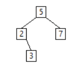
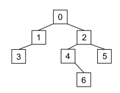

Épreuve Pratique BNS 2023¶
Les sujets ci-dessous correspondent à la dernière version officielle, publiée le 25/01/2023.
▶ Sujet 01¶
Exercice 01.1¶
Exercice 01.1
Programmer la fonction verifie qui prend en paramètre un tableau de valeurs numériques non
vide et qui renvoie True si ce tableau est trié dans l’ordre croissant, False sinon.
Exemples :
Exemples :
>>> verifie([0, 5, 8, 8, 9])
True
>>> verifie([8, 12, 4])
False
>>> verifie([-1, 4])
True
>>> verifie([5])
True
| 🐍 Script Python | |
|---|---|
1 2 3 4 5 | |
Exercice 01.2¶
Exercice 01.2
Les résultats d'un vote ayant trois issues possibles 'A', 'B' et 'C' sont stockés dans un tableau.
Exemple :
urne = ['A', 'A', 'A', 'B', 'C', 'B', 'C', 'B', 'C', 'B']
La fonction depouille doit permettre de compter le nombre de votes exprimés pour chaque
artiste. Elle prend en paramètre un tableau et renvoie le résultat dans un dictionnaire dont les
clés sont les noms des artistes et les valeurs le nombre de votes en leur faveur.
La fonction vainqueur doit désigner le nom du ou des gagnants. Elle prend en paramètre un
dictionnaire dont la structure est celle du dictionnaire renvoyé par la fonction depouille et
renvoie un tableau. Ce tableau peut donc contenir plusieurs éléments s’il y a des artistes ex-
aequo.
Compléter les fonctions depouille et vainqueur ci-après pour qu’elles renvoient les
résultats attendus.
| 🐍 Script Python | |
|---|---|
1 2 3 4 5 6 7 8 9 10 11 12 13 14 15 16 17 18 19 20 | |
Exemples d’utilisation :
>>> election = depouille(urne)
>>> election
{'A': 3, 'B': 4, 'C': 3}
>>> vainqueur(election)
['B']
| 🐍 Script Python | |
|---|---|
1 2 3 4 5 6 7 8 9 10 11 12 13 14 15 16 17 18 19 20 | |
- Il est pourtant très déconseillé de nommer une variable avec le même nom que la fonction qui la contient...
- Cette variable
vainqueurest inutile, on ne s'en sert pas dans l'élaboration de la liste finale.
▶ Sujet 02¶
Exercice 02.1¶
Exercice 02.1
Écrire une fonction indices_maxi qui prend en paramètre une liste tab, non vide, de
nombres entiers et renvoie un couple donnant d’une part le plus grand élément de cette
liste et d’autre part la liste des indices de la liste tab où apparaît ce plus grand élément.
Exemple :
>>> indices_maxi([1, 5, 6, 9, 1, 2, 3, 7, 9, 8])
(9, [3, 8])
>>> indices_maxi([7])
(7, [0])
| 🐍 Script Python | |
|---|---|
1 2 3 4 5 6 7 8 9 10 | |
Exercice 02.2¶
Exercice 02.2
Cet exercice utilise des piles qui seront représentées en Python par des listes (type list).
On rappelle que l’expression liste_1 = list(liste) fait une copie de listeindépendante de liste, que
l’expression x = liste.pop() enlève le sommet de la pile liste et le place dans la variable x et,
enfin, que l’expression liste.append(v) place la valeur v au sommet de la pile liste.
Compléter le code Python de la fonction positif ci-dessous qui prend une pile liste de
nombres entiers en paramètre et qui renvoie la pile des entiers positifs dans le même
ordre, sans modifier la variable liste.
| 🐍 Script Python | |
|---|---|
1 2 3 4 5 6 7 8 9 10 11 | |
Exemple :
>>> positif([-1, 0, 5, -3, 4, -6, 10, 9, -8])
[0, 5, 4, 10, 9]
>>> positif([-2])
[]
| 🐍 Script Python | |
|---|---|
1 2 3 4 5 6 7 8 9 10 11 | |
▶ Sujet 03¶
Exercice 03.1¶
Exercice 03.1
Dans cet exercice, les nombres sont des entiers ou des flottants.
Écrire une fonction moyenne renvoyant la moyenne pondérée d’une liste non vide,
passée en paramètre, de tuples à deux éléments de la forme (valeur,
coefficient) où valeur et coefficient sont des nombres positifs ou nuls.
Si la somme des coefficients est nulle, la fonction renvoie None, si la somme des
coefficients est non nulle, la fonction renvoie, sous forme de flottant, la moyenne des
valeurs affectées de leur coefficient.
Exemple :
>>> moyenne([(8, 2), (12, 0), (13.5, 1), (5, 0.5)])
9.142857142857142
>>> moyenne([(3, 0), (5, 0)])
None
Dans le premier exemple la moyenne est calculée par la formule :
\(\dfrac{8 \times 2 + 12 \times 0 + 13,5 \times 1 + 5 \times 0,5}{2+0+1+0,5}\)
| 🐍 Script Python | |
|---|---|
1 2 3 4 5 6 7 8 9 | |
Exercice 03.2¶
Exercice 03.2
 On travaille sur des dessins en noir et blanc obtenu à partir de pixels noirs et blancs :
La figure « cœur » ci-dessus va servir d’exemple.
On la représente par une grille de nombres, c’est-à-dire par une liste composée de sous-listes de même longueurs.
Chaque sous-liste représentera donc une ligne du dessin.
On travaille sur des dessins en noir et blanc obtenu à partir de pixels noirs et blancs :
La figure « cœur » ci-dessus va servir d’exemple.
On la représente par une grille de nombres, c’est-à-dire par une liste composée de sous-listes de même longueurs.
Chaque sous-liste représentera donc une ligne du dessin.
Dans le code ci-dessous, la fonction affiche permet d’afficher le dessin. Les pixels noirs
(1 dans la grille) seront représentés par le caractère "*" et les blancs (0 dans la grille) par
deux espaces.
La fonction zoomListe prend en argument une liste liste_depart et un entier k. Elle
renvoie une liste où chaque élément de liste_depart est dupliqué k fois.
La fonction zoomDessin prend en argument la grille dessin et renvoie une grille où
toutes les lignes de dessin sont zoomées k fois et répétées k fois.
Soit le code ci-dessous :
| 🐍 Script Python | |
|---|---|
1 2 3 4 5 6 7 8 9 10 11 12 13 14 15 16 17 18 19 20 21 22 23 24 25 26 27 28 29 30 31 32 33 34 35 36 37 38 39 40 41 42 43 | |
Résultats à obtenir :
>>> affiche(coeur)

>>> affiche(zoomDessin(coeur,3))
* * * * * * * * * * * *
* * * * * * * * * * * *
* * * * * * * * * * * *
* * * * * * * * * * * *
* * * * * * * * * * * *
* * * * * * * * * * * *
* * * * * * * * *
* * * * * * * * *
* * * * * * * * *
* * * * * *
* * * * * *
* * * * * *
* * * * * *
* * * * * *
* * * * * *
* * * * * *
* * * * * *
* * * * * *
* * * * * *
* * * * * *
* * * * * *
* * * * * *
* * * * * *
* * * * * *
* * * * * *
* * * * * *
* * * * * *
* * *
* * *
* * *
| 🐍 Script Python | |
|---|---|
1 2 3 4 5 6 7 8 9 10 11 12 13 14 15 16 17 18 19 20 21 22 23 24 25 26 27 28 29 30 31 32 33 34 35 36 37 38 39 40 41 42 43 | |
▶ Sujet 04¶
Exercice 04.1¶
Exercice 04.1
Écrire une fonction a_doublon qui prend en paramètre une liste triée de nombres et
renvoie True si la liste contient au moins deux nombres identiques, False sinon.
Par exemple :
>>> a_doublon([])
False
>>> a_doublon([1])
False
>>> a_doublon([1, 2, 4, 6, 6])
True
>>> a_doublon([2, 5, 7, 7, 7, 9])
True
>>> a_doublon([0, 2, 3])
False
| 🐍 Script Python | |
|---|---|
1 2 3 4 5 | |
Exercice 04.2¶
Exercice 04.2
On souhaite générer des grilles du jeu de démineur à partir de la position des bombes à
placer.
On se limite à la génération de grilles carrées de taille \(n \times n\) où \(n\) est le nombre de bombes du jeu.
Dans le jeu du démineur, chaque case de la grille contient soit une bombe, soit une valeur qui correspond aux nombres de bombes situées dans le voisinage direct de la case (au- dessus, en dessous, à droite, à gauche ou en diagonale : chaque case a donc 8 voisins si elle n'est pas située au bord de la grille).
Voici un exemple de grille \(5 \times 5\) de démineur dans laquelle la bombe est représentée par une étoile :

On utilise une liste de listes pour représenter la grille et on choisit de coder une bombe par la valeur -1.
L'exemple ci-contre sera donc codé par la liste :
[[1, 1, 1, 0, 0],
[1, -1, 1, 1, 1],
[2, 2, 3, 2, -1],
[1, -1, 2, -1, 3],
[1, 1, 2, 2, -1]]
Compléter le code suivant afin de générer des grilles de démineur, on pourra vérifier que
l’instruction genere_grille([(1, 1), (2, 4), (3, 1), (3, 3), (4, 4)])
produit bien la liste donnée en exemple.
| 🐍 Script Python | |
|---|---|
1 2 3 4 5 6 7 8 9 10 11 12 13 14 15 16 17 18 19 20 21 22 23 24 25 26 27 28 29 30 31 32 33 34 | |
| 🐍 Script Python | |
|---|---|
1 2 3 4 5 6 7 8 9 10 11 12 13 14 15 16 17 18 19 20 21 22 23 24 25 26 27 28 29 30 31 32 33 34 | |
▶ Sujet 05¶
Exercice 05.1¶
Exercice 05.1
Écrire en python deux fonctions :
-
lancerde paramètren, un entier positif, qui renvoie un tableau de typelistdenentiers obtenus aléatoirement entre 1 et 6 (1 et 6 inclus) ; -
paire_6de paramètretab, un tableau de typelistdenentiers entre 1 et 6 obtenus aléatoirement, qui renvoie un booléen égal àTruesi le nombre de 6 est supérieur ou égal à 2,Falsesinon.
On pourra utiliser la fonction randint(a,b) du module random pour laquelle la
documentation officielle est la suivante :
Renvoie un entier aléatoire N tel que a <=N <= b.
Exemples :
>>> lancer1 = lancer(5)
[5, 6, 6, 2, 2]
>>> paire_6(lancer1)
True
>>> lancer2 = lancer(5)
[6, 5, 1, 6, 6]
>>> paire_6(lancer2)
True
>>> lancer3 = lancer(3)
[2, 2, 6]
>>> paire_6(lancer3)
False
>>> lancer4 = lancer(0)
[]
>>> paire_6(lancer4)
False
| 🐍 Script Python | |
|---|---|
1 2 3 4 5 6 7 8 9 10 11 12 13 14 | |
Exercice 05.2¶
Exercice 05.2
On considère une image en 256 niveaux de gris que l’on représente par une grille de nombres, c’est-à-dire une liste composée de sous-listes toutes de longueurs identiques.
La largeur de l’image est donc la longueur d’une sous-liste et la hauteur de l’image est le nombre de sous-listes.
Chaque sous-liste représente une ligne de l’image et chaque élément des sous-listes est un entier compris entre 0 et 255, représentant l’intensité lumineuse du pixel.
Le négatif d’une image est l’image constituée des pixels x_n tels que
x_n + x_i = 255 où x_i est le pixel correspondant de l’image initiale.
Compléter le programme suivant :
| 🐍 Script Python | |
|---|---|
1 2 3 4 5 6 7 8 9 10 11 12 13 14 15 16 17 18 19 20 21 22 23 24 25 26 27 28 29 30 31 32 33 34 35 36 | |
Exemples :
>>> img=[[20, 34, 254, 145, 6], [23, 124, 237, 225, 69], [197, 174,
207, 25, 87], [255, 0, 24, 197, 189]]
>>> nbLig(img)
4
>>> nbCol(img)
5
>>> negatif(img)
[[235, 221, 1, 110, 249], [232, 131, 18, 30, 186], [58, 81, 48, 230,
168], [0, 255, 231, 58, 66]]
>>> binaire(img,120)
[[0, 0, 1, 1, 0], [0, 1, 1, 1, 0], [1, 1, 1, 0, 0], [1, 0, 0, 1, 1]]
| 🐍 Script Python | |
|---|---|
1 2 3 4 5 6 7 8 9 10 11 12 13 14 15 16 17 18 19 20 21 22 23 24 25 26 27 28 29 30 31 32 33 34 35 36 | |
▶ Sujet 06¶
Exercice 06.1¶
Exercice 06.1
Programmer la fonction recherche, prenant en paramètre un tableau non vide tab (type list) d'entiers et un entier n, et qui renvoie l'indice de la dernière occurrence de l'élément cherché. Si l'élément n'est pas présent, la fonction renvoie la longueur du tableau.
Exemples
>>> recherche([5, 3],1)
2
>>> recherche([2,4],2)
0
>>> recherche([2,3,5,2,4],2)
3
| 🐍 Script Python | |
|---|---|
1 2 3 4 5 6 | |
Exercice 06.2¶
Exercice 06.2
On souhaite programmer une fonction donnant la distance la plus courte entre un point de départ et une liste de points. Les points sont tous à coordonnées entières. Les points sont donnés sous la forme d'un tuple de deux entiers. La liste des points à traiter est donc un tableau de tuples.
On rappelle que la distance entre deux points du plan de coordonnées \((x;y)\) et \((x';y')\) est donnée par la formule :
On importe pour cela la fonction racine carrée (sqrt) du module math de Python.
Compléter le code des fonctions distance et plus_courte_distance fournies ci-dessous pour qu’elles répondent à leurs spécifications.
| 🐍 Script Python | |
|---|---|
1 2 3 4 5 6 7 8 9 10 11 12 13 14 15 | |
Exemples :
>>> distance((1, 0), (5, 3))
5.0
>>> distance((1, 0), (0, 1))
1.4142135623730951
>>> plus_courte_distance([(7, 9), (2, 5), (5, 2)], (0, 0))
(2, 5)
>>> plus_courte_distance([(7, 9), (2, 5), (5, 2)], (5, 2))
(5, 2)
| 🐍 Script Python | |
|---|---|
1 2 3 4 5 6 7 8 9 10 11 12 13 14 15 | |
▶ Sujet 07¶
Exercice 07.1¶
Exercice 07.1
Programmer la fonction fusion prenant en paramètres deux tableaux non vides tab1 et tab2
(type list) d'entiers, chacun dans l’ordre croissant, et renvoyant un tableau trié dans l’ordre
croissant et contenant l’ensemble des valeurs de tab1 et tab2.
Exemples :
>>> fusion([3, 5], [2, 5])
[2, 3, 5, 5]
>>> fusion([-2, 4], [-3, 5, 10])
[-3, -2, 4, 5, 10]
>>> fusion([4], [2, 6])
[2, 4, 6]
| 🐍 Script Python | |
|---|---|
1 2 3 4 5 6 7 8 9 10 11 12 13 14 15 16 17 18 19 20 21 22 | |
Exercice 07.2¶
Exercice 07.2
Le but de cet exercice est d’écrire une fonction récursive traduire_romain qui prend
en paramètre une chaîne de caractères, non vide, représentant un nombre écrit en
chiffres romains et qui renvoie son écriture décimale.
Les chiffres romains considérés sont : I, V, X, L, C, D et M. Ils représentent respectivement les nombres 1, 5, 10, 50, 100, 500, et 1000 en base dix.
On dispose d’un dictionnaire romains dont les clés sont les caractères apparaissant
dans l’écriture en chiffres romains et les valeurs sont les nombres entiers associés en
écriture décimale :
romains = {"I":1, "V":5, "X":10, "L":50, "C":100, "D":500, "M":1000}
Le code de la fonction traduire_romain fournie repose sur le
principe suivant :
-
la valeur d’un caractère est ajoutée à la valeur du reste de la chaîne si ce caractère a une valeur supérieure (ou égale) à celle du caractère qui le suit ;
-
la valeur d’un caractère est retranchée à la valeur du reste de la chaîne si ce caractère a une valeur strictement inférieure à celle du caractère qui le suit.
Ainsi, XIV correspond au nombre 10 + 5 - 1 puisque :
-
la valeur de X (10) est supérieure à celle de I (1), on ajoute donc 10 à la valeur du reste de la chaîne, c’est-à-dire IV ;
-
la valeur de I (1) est strictement inférieure à celle de V (5), on soustrait donc 1 à la valeur du reste de la chaîne, c’est-à-dire V.
On rappelle que pour priver une chaîne de caractères de son premier caractère, on utilisera l’instruction :
nom_de_variable[1:]
Par exemple, si la variable mot contient la chaîne "CDI", mot[1:] renvoie "DI".
| 🐍 Script Python | |
|---|---|
1 2 3 4 5 6 7 8 9 10 11 | |
Compléter le code de la fonction traduire_romain et le tester.
Exemples :
>>> traduire_romain("XIV")
14
>>> traduire_romain("CXLII")
142
>>> traduire_romain("MMXXIII")
2023
| 🐍 Script Python | |
|---|---|
1 2 3 4 5 6 7 8 9 10 11 | |
▶ Sujet 08¶
Exercice 08.1¶
Exercice 08.1
Sur le réseau social TipTop, on s’intéresse au nombre de « like » des abonnés. Les données sont stockées dans des dictionnaires où les clés sont les pseudos et les valeurs correspondantes sont les nombres de « like » comme ci-dessous :
{'Bob': 102, 'Ada': 201, 'Alice': 103, 'Tim': 50}
Écrire une fonction max_dico qui :
- Prend en paramètre un dictionnaire
diconon vide dont les clés sont des chaînes de caractères et les valeurs associées sont des entiers ; - Renvoie un tuple dont :
- La première valeur est la clé du dictionnaire associée à la valeur maximale ;
- La seconde valeur est la première valeur maximale présente dans le dictionnaire.
Exemples :
>>> max_dico({'Bob': 102, 'Ada': 201, 'Alice': 103, 'Tim': 50})
('Ada', 201)
>>> max_dico({'Alan': 222, 'Ada': 201, 'Eve': 220, 'Tim': 50})
('Alan', 222)
| 🐍 Script Python | |
|---|---|
1 2 3 4 5 6 7 8 | |
Exercice 08.2¶
Exercice 08.2
Nous avons l’habitude de noter les expressions arithmétiques avec des parenthèses comme par exemple : (2 + 3) × 5.
Il existe une autre notation utilisée par certaines calculatrices, appelée notation postfixe, qui n’utilise pas de parenthèses. L’expression arithmétique précédente est alors obtenue en saisissant successivement 2, puis 3, puis l’opérateur +, puis 5, et enfin l’opérateur ×. On modélise cette saisie par le tableau [2, 3, '+', 5, '*'].
Autre exemple, la notation postfixe de 3 × 2 + 5 est modélisée par le tableau :
[3, 2, '*', 5, '+'].
D’une manière plus générale, la valeur associée à une expression arithmétique en notation postfixe est déterminée à l’aide d’une pile en parcourant l’expression arithmétique de gauche à droite de la façon suivante :
- Si l’élément parcouru est un nombre, on le place au sommet de la pile ;
- Si l’élément parcouru est un opérateur, on récupère les deux éléments situés au sommet de la pile et on leur applique l’opérateur. On place alors le résultat au sommet de la pile.
- À la fin du parcours, il reste alors un seul élément dans la pile qui est le résultat de l’expression arithmétique.
Dans le cadre de cet exercice, on se limitera aux opérations × et +.
Pour cet exercice, on dispose d’une classe Pile qui implémente les méthodes de base sur la
structure de pile.
Compléter le script de la fonction eval_expression qui reçoit en paramètre une liste python
représentant la notation postfixe d’une expression arithmétique et qui renvoie sa valeur
associée.
| 🐍 Script Python | |
|---|---|
1 2 3 4 5 6 7 8 9 10 11 12 13 14 15 16 17 18 19 20 21 22 23 24 25 26 27 28 29 30 31 32 33 34 | |
Exemple :
>>> eval_expression([2, 3, '+', 5, '*'])
25
| 🐍 Script Python | |
|---|---|
1 2 3 4 5 6 7 8 9 10 11 12 13 14 15 16 17 18 19 20 21 22 23 24 25 26 27 28 29 30 31 32 33 34 | |
Nous avons l’habitude de noter les expressions arithmétiques avec des parenthèses comme
par exemple : (2 + 3) × 5.
Il existe une autre notation utilisée par certaines calculatrices, appelée notation postfixe, qui n’utilise pas de parenthèses. L’expression arithmétique précédente est alors obtenue en
saisissant successivement 2, puis 3, puis l’opérateur +, puis 5, et enfin l’opérateur ×. On
modélise cette saisie par le tableau [2, 3, '+', 5, '*'].
Autre exemple, la notation postfixe de 3 × 2 + 5 est modélisée par le tableau :
[3, 2, '*', 5, '+'].
D’une manière plus générale, la valeur associée à une expression arithmétique en notation
postfixe est déterminée à l’aide d’une pile en parcourant l’expression arithmétique de gauche
à droite de la façon suivante :
- Si l’élément parcouru est un nombre, on le place au sommet de la pile ;
- Si l’élément parcouru est un opérateur, on récupère les deux éléments situés au
sommet de la pile et on leur applique l’opérateur. On place alors le résultat au sommet
de la pile.
- À la fin du parcours, il reste alors un seul élément dans la pile qui est le résultat de
l’expression arithmétique.
Dans le cadre de cet exercice, on se limitera aux opérations × et +.
Pour cet exercice, on dispose d’une classe `Pile` qui implémente les méthodes de base sur la
structure de pile.
Compléter le script de la fonction `eval_expression` qui reçoit en paramètre une liste python
représentant la notation postfixe d’une expression arithmétique et qui renvoie sa valeur
associée.
```python linenums='1'
class Pile:
"""Classe définissant une structure de pile."""
def __init__(self):
self.contenu = []
def est_vide(self):
"""Renvoie le booléen True si la pile est vide, False sinon."""
return self.contenu == []
def empiler(self, v):
"""Place l'élément v au sommet de la pile"""
self.contenu.append(v)
def depiler(self):
"""
Retire et renvoie l’élément placé au sommet de la pile,
si la pile n’est pas vide.
"""
if not self.est_vide():
return self.contenu.pop()
def eval_expression(tab):
p = Pile()
for ... in tab:
if element != '+' ... element != '*':
p.empiler(...)
else:
if element == ...:
resultat = p.depiler() + ...
else:
resultat = ...
p.empiler(...)
return ...
Exemple :
>>> eval_expression([2, 3, '+', 5, '*'])
25
▶ Sujet 09¶
Exercice 09.1¶
Exercice 09.1
Programmer la fonction multiplication, prenant en paramètres deux nombres entiers
n1 et n2, et qui renvoie le produit de ces deux nombres.
Les seules opérations autorisées sont l’addition et la soustraction.
Exemples :
>>> multiplication(3,5)
15
>>> multiplication(-4,-8)
32
>>> multiplication(-2,6)
-12
>>> multiplication(-2,0)
0
| 🐍 Script Python | |
|---|---|
1 2 3 4 5 6 7 8 9 | |
Exercice 09.2¶
Exercice 09.2
Soit tab un tableau non vide d'entiers triés dans l'ordre croissant et n un entier.
La fonction chercher ci-dessous doit renvoyer un indice où la valeur n
apparaît dans tab si cette valeur y figure et None sinon.
Les paramètres de la fonction sont :
tab, le tableau dans lequel s'effectue la recherche ;n, l'entier à chercher dans le tableau ;i, l'indice de début de la partie du tableau où s'effectue la recherche ;j, l'indice de fin de la partie du tableau où s'effectue la recherche.
L’algorithme demandé est une recherche dichotomique récursive.
Recopier et compléter le code de la fonction chercher suivante :
| 🐍 Script Python | |
|---|---|
1 2 3 4 5 6 7 8 9 10 11 12 | |
L'exécution du code doit donner :
>>> chercher([1, 5, 6, 6, 9, 12], 7, 0, 10)
>>> chercher([1, 5, 6, 6, 9, 12], 7, 0, 5)
>>> chercher([1, 5, 6, 6, 9, 12], 9, 0, 5)
4
>>> chercher([1, 5, 6, 6, 9, 12], 6, 0, 5)
2
| 🐍 Script Python | |
|---|---|
1 2 3 4 5 6 7 8 9 10 11 12 | |
▶ Sujet 10¶
Exercice 10.1¶
Exercice 10.1
Écrire la fonction maxliste, prenant en paramètre un tableau non vide de nombres tab (de type
list) et renvoyant le plus grand élément de ce tableau.
Exemples :
>>> maxliste([98, 12, 104, 23, 131, 9])
131
>>> maxliste([-27, 24, -3, 15])
24
| 🐍 Script Python | |
|---|---|
1 2 3 4 5 6 | |
Exercice 10.2¶
Exercice 10.2
On dispose de chaînes de caractères contenant uniquement des parenthèses ouvrantes et fermantes.
Un parenthésage est correct si :
- le nombre de parenthèses ouvrantes de la chaîne est égal au nombre de parenthèses fermantes.
- en parcourant la chaîne de gauche à droite, le nombre de parenthèses déjà ouvertes doit être, à tout moment, supérieur ou égal au nombre de parenthèses déjà fermées.
Ainsi, ((()())(())) est un parenthésage correct.
Les parenthésages ())(() et (())(() sont, eux, incorrects.
On dispose du code de la classe Pile suivant :
| 🐍 Script Python | |
|---|---|
1 2 3 4 5 6 7 8 9 10 11 12 13 14 15 16 17 | |
On souhaite programmer une fonction parenthesage qui prend en paramètre une chaîne de caractères ch formée de
parenthèses et renvoie True si la chaîne est bien parenthésée et False sinon.
Cette fonction utilise une pile et suit le principe suivant : en parcourant la chaîne de gauche à droite, si on trouve une parenthèse ouvrante, on l’empile au sommet de la pile et si on trouve une parenthèse fermante, on dépile (si possible) la parenthèse ouvrante stockée au sommet de la pile.
La chaîne est alors bien parenthésée si, à la fin du parcours, la pile est vide.
Elle est, par contre, mal parenthésée :
- si dans le parcours, on trouve une parenthèse fermante, alors que la pile est vide ;
- ou si, à la fin du parcours, la pile n’est pas vide.
| 🐍 Script Python | |
|---|---|
1 2 3 4 5 6 7 8 9 10 11 12 | |
Compléter le code de la fonction parenthesage.
Exemples :
>>> parenthesage("((()())(()))")
True
>>> parenthesage("())(()")
False
>>> parenthesage("(())(()")
False
| 🐍 Script Python | |
|---|---|
1 2 3 4 5 6 7 8 9 10 11 12 13 14 15 16 17 18 19 20 21 22 23 24 25 26 27 28 29 30 | |
▶ Sujet 11¶
Exercice 11.1¶
Exercice 11.1
On modélise la représentation binaire d'un entier non signé par un tableau d'entiers dont
les éléments sont 0 ou 1. Par exemple, le tableau [1, 0, 1, 0, 0, 1, 1] représente
l'écriture binaire de l'entier dont l'écriture décimale est
2**6 + 2**4 + 2**1 + 2**0 = 83.
À l'aide d'un parcours séquentiel, écrire la fonction convertir répondant aux
spécifications suivantes :
def convertir(tab):
"""
tab est un tableau d'entiers, dont les éléments sont 0 ou 1 et
représentant un entier écrit en binaire. Renvoie l'écriture
décimale de l'entier positif dont la représentation binaire
est donnée par le tableau tab
"""
>>> convertir([1, 0, 1, 0, 0, 1, 1])
83
>>> convertir([1, 0, 0, 0, 0, 0, 1, 0])
130
| 🐍 Script Python | |
|---|---|
1 2 3 4 5 6 7 | |
Exercice 11.2¶
Exercice 11.2
La fonction tri_insertion suivante prend en argument une liste tab et trie cette liste en
utilisant la méthode du tri par insertion. Compléter cette fonction pour qu'elle réponde à la
spécification demandée.
On rappelle le principe du tri par insertion : on considère les éléments à trier un par un, le premier élément constituant, à lui tout seul, une liste triée de longueur 1. On range ensuite le second élément pour constituer une liste triée de longueur 2, puis on range le troisième élément pour avoir une liste triée de longueur 3 et ainsi de suite… A chaque étape, le premier élément de la sous-liste non triée est placé dans la sous-liste des éléments déjà triés de sorte que cette sous-liste demeure triée.
Le principe du tri par insertion est donc d'insérer à la n-ième itération, le n-ième élément à la bonne place.
| 🐍 Script Python | |
|---|---|
1 2 3 4 5 6 7 8 9 10 11 12 | |
Exemples :
>>> liste = [9, 5, 8, 4, 0, 2, 7, 1, 10, 3, 6]
>>> tri_insertion(liste)
>>> liste
[0, 1, 2, 3, 4, 5, 6, 7, 8, 9, 10]
| 🐍 Script Python | |
|---|---|
1 2 3 4 5 6 7 8 9 10 11 12 | |
▶ Sujet 12¶
Exercice 12.1¶
Exercice 12.1
On considère la classe ABR, dont le constructeur est le suivant :
class ABR:
def __init__(self, g0, v0, d0):
self.gauche = g0
self.cle = v0
self.droit = d0
def __repr__(self):
if self is None:
return ''
else:
return '(' + (self.gauche).__repr__() + ',' + str(self.cle) + ',' +(self.droit).__repr__() + ')'

Ainsi, l’arbre binaire de recherche abr1 ci-
contre est créé par le code python ci-
dessous
n0 = ABR(None, 0, None)
n3 = ABR(None, 3, None)
n2 = ABR(None, 2, n3)
n3 = ABR(n0, 1, n2)
Dans tout le code, None correspondra à un arbre vide.
La classe ABR dispose aussi d’une méthode de représentation (__repr__ ), qui affiche entre
parenthèses le contenu du sous arbre gauche, puis la clé de l’arbre, et enfin le
contenu du sous arbre droit. Elle s’utilise en console de la manière suivante :
>>> abr1
((None,0,None),1,(None,2,(None,3,None)))
Écrire une fonction récursive ajoute(cle, a) qui prend en paramètres une clé cle
et un arbre binaire de recherche a , et qui renvoie un arbre binaire de recherche dans
lequel cle a été insérée.
Dans le cas où cle est déjà présente dans a, la fonction renvoie l’arbre a inchangé.
Résultats à obtenir :
>>> a = ajoute(4, abr1)
>>> a
((None,0,None),1,(None,2,(None,3,(None,4,None))))
>>> ajoute(-5, abr1)
(((None,-5,None),0,None),1,(None,2,(None,3,None)))
>>> ajoute(2, abr1)
((None,0,None),1,(None,2,(None,3,None)))
| 🐍 Script Python | |
|---|---|
1 2 3 4 5 6 7 8 | |
Exercice 12.2¶
Exercice 12.2
On dispose d’un ensemble d’objets dont on connaît, pour chacun, la masse. On
souhaite ranger l’ensemble de ces objets dans des boites identiques de telle
manière que la somme des masses des objets contenus dans une boîte ne dépasse
pas la capacité c de la boîte. On souhaite utiliser le moins de boîtes possibles pour
ranger cet ensemble d’objets.
Pour résoudre ce problème, on utilisera un algorithme glouton consistant à placer chacun des objets dans la première boîte où cela est possible.
Par exemple, pour ranger dans des boîtes de capacité c = 5 un ensemble de trois
objets dont les masses sont représentées en Python par la liste [1, 5, 2], on
procède de la façon suivante :
- Le premier objet, de masse 1, va dans une première boite.
- Le deuxième objet, de masse 5, ne peut pas aller dans la même boite que le premier objet car cela dépasserait la capacité de la boite. On place donc cet objet dans une deuxième boîte.
- Le troisième objet, de masse 2, va dans la première boîte.
On a donc utilisé deux boîtes de capacité c = 5 pour ranger les 3 objets.
Compléter la fonction Python empaqueter(liste_masses, c) suivante pour
qu’elle renvoie le nombre de boîtes de capacité c nécessaires pour empaqueter un
ensemble d’objets dont les masses sont contenues dans la liste liste_masses.
| 🐍 Script Python | |
|---|---|
1 2 3 4 5 6 7 8 9 10 11 12 | |
Tester ensuite votre fonction :
>>> empaqueter([7, 6, 3, 4, 8, 5, 9, 2], 11)
5
| 🐍 Script Python | |
|---|---|
1 2 3 4 5 6 7 8 9 10 11 12 | |
On dispose d’un ensemble d’objets dont on connaît, pour chacun, la masse. On
souhaite ranger l’ensemble de ces objets dans des boites identiques de telle
manière que la somme des masses des objets contenus dans une boîte ne dépasse
pas la capacité `c` de la boîte. On souhaite utiliser le moins de boîtes possibles pour
ranger cet ensemble d’objets.
Pour résoudre ce problème, on utilisera un algorithme glouton consistant à placer
chacun des objets dans la première boîte où cela est possible.
Par exemple, pour ranger dans des boîtes de capacité `c = 5` un ensemble de trois
objets dont les masses sont représentées en Python par la liste `[1, 5, 2]`, on
procède de la façon suivante :
- Le premier objet, de masse 1, va dans une première boite.
- Le deuxième objet, de masse 5, ne peut pas aller dans la même boite que le
premier objet car cela dépasserait la capacité de la boite. On place donc cet
objet dans une deuxième boîte.
- Le troisième objet, de masse 2, va dans la première boîte.
On a donc utilisé deux boîtes de capacité `c = 5` pour ranger les 3 objets.
Compléter la fonction Python `empaqueter(liste_masses, c)` suivante pour
qu’elle renvoie le nombre de boîtes de capacité c nécessaires pour empaqueter un
ensemble d’objets dont les masses sont contenues dans la liste `liste_masses`.
```python linenums='1'
def empaqueter(liste_masses, c):
n = len(liste_masses)
nb_boites = 0
boites = [0]*n
for masse in ... :
i = 0
while i <= nb_boites and boites[i] + ... > C:
i = i + 1
if i == nb_boites + 1:
...
boites[i] = ...
return ...
Tester ensuite votre fonction :
>>> empaqueter([7, 6, 3, 4, 8, 5, 9, 2], 11)
5
▶ Sujet 13¶
Exercice 13.1¶
Exercice 13.1
Écrire en langage Python une fonction recherche prenant comme paramètres une
variable a de type numérique (float ou int) et un tableau tab (type list) et qui
renvoie le nombre d'occurrences de a dans tab.
Exemples :
>>> recherche(5, [])
0
>>> recherche(5, [-2, 3, 4, 8])
0
>>> recherche(5, [-2, 3, 1, 5, 3, 7, 4])
1
>>> recherche(5, [-2, 5, 3, 5, 4, 5])
3
| 🐍 Script Python | |
|---|---|
1 2 3 4 5 6 | |
Exercice 13.2¶
Exercice 13.2
La fonction rendu_monnaie prend en paramètres deux nombres entiers
positifs somme_due et somme_versee et elle permet de procéder au rendu de monnaie de la
différence somme_versee – somme_due pour des achats effectués avec le système de pièces de
la zone Euro. On utilise pour cela un algorithme glouton qui commence par rendre le maximum de
pièces de plus grandes valeurs et ainsi de suite. Par la suite, on
assimilera les billets à des pièces.
La fonction rendu_monnaie renvoie un tableau de type list contenant les pièces qui
composent le rendu.
Toutes les sommes sont exprimées en euros. Les valeurs possibles pour les
pièces sont donc [1, 2, 5, 10, 20, 50, 100, 200].
Ainsi, l’instruction rendu_monnaie(452, 500)
renvoie le tableau
[20, 20, 5, 2, 1].
En effet, la somme à rendre est de 48 euros soit 20 + 20 + 5 + 2 + 1.
Le code de la fonction rendu_monnaie est donné ci-dessous :
| 🐍 Script Python | |
|---|---|
1 2 3 4 5 6 7 8 9 10 11 12 | |
Compléter ce code et le tester :
>>> rendu_monnaie(700,700)
[]
>>> rendu_monnaie(102,500)
[200, 100, 50, 20, 20, 5, 2, 1]
| 🐍 Script Python | |
|---|---|
1 2 3 4 5 6 7 8 9 10 11 12 | |
▶ Sujet 14¶
Exercice 14.1¶
Exercice 14.1
Écrire une fonction recherche qui prend en paramètres elt un nombre entier et tab
un tableau de nombres entiers, et qui renvoie l’indice de la première occurrence de elt
dans tab si elt est dans tab et -1 sinon.
Ne pas oublier d’ajouter au corps de la fonction une documentation et une ou plusieurs assertions pour vérifier les pré-conditions.
Exemples :
>>> recherche(1, [2, 3, 4])
-1
>>> recherche(1, [10, 12, 1, 56])
2
>>> recherche(50, [1, 50, 1])
1
>>> recherche(15, [8, 9, 10, 15])
3
| 🐍 Script Python | |
|---|---|
1 2 3 4 5 6 7 8 9 10 | |
Exercice 14.2¶
Exercice 14.2
On considère la fonction insere ci-dessous qui prend en argument un entier a et un
tableau tab d'entiers triés par ordre croissant. Cette fonction crée et renvoie un nouveau
tableau à partir de celui fourni en paramètre en y insérant la valeur a de sorte que le
tableau renvoyé soit encore trié par ordre croissant. Les tableaux seront représentés sous
la forme de listes Python.
| 🐍 Script Python | |
|---|---|
1 2 3 4 5 6 7 8 9 10 11 12 13 14 | |
Compléter la fonction insere ci-dessus.
Exemples :
>>> insere(3, [1, 2, 4, 5])
[1, 2, 3, 4, 5]
>>> insere(30, [1, 2, 7, 12, 14, 25])
[1, 2, 7, 12, 14, 25, 30]
>>> insere(1, [2, 3, 4])
[1, 2, 3, 4]
>>> insere(1, [])
[1]
| 🐍 Script Python | |
|---|---|
1 2 3 4 5 6 7 8 9 10 11 12 13 14 | |
▶ Sujet 15¶
Exercice 15.1¶
Exercice 15.1
On a relevé les valeurs moyennes annuelles des températures à Paris pour la période allant de 2013 à 2019. Les résultats ont été récupérés sous la forme de deux listes : l’une pour les températures, l’autre pour les années :
t_moy = [14.9, 13.3, 13.1, 12.5, 13.0, 13.6, 13.7]
annees = [2013, 2014, 2015, 2016, 2017, 2018, 2019]
Écrire la fonction mini qui prend en paramètres un tableau releve des relevés et un
tableau date des dates et qui renvoie la plus petite valeur relevée au cours de la
période et l’année correspondante. On suppose que la température minimale est atteinte
une seule fois.
Exemple :
>>> mini(t_moy, annees)
(12.5, 2016)
| 🐍 Script Python | |
|---|---|
1 2 3 4 5 6 7 8 9 10 11 | |
On a relevé les valeurs moyennes annuelles des températures à Paris pour la période
allant de 2013 à 2019. Les résultats ont été récupérés sous la forme de deux listes : l’une pour les températures, l’autre pour les années :
```python
t_moy = [14.9, 13.3, 13.1, 12.5, 13.0, 13.6, 13.7]
annees = [2013, 2014, 2015, 2016, 2017, 2018, 2019]
```
Écrire la fonction `mini` qui prend en paramètres un tableau `releve` des relevés et un
tableau `date` des dates et qui renvoie la plus petite valeur relevée au cours de la
période et l’année correspondante. On suppose que la température minimale est atteinte
une seule fois.
Exemple :
```python
>>> mini(t_moy, annees)
(12.5, 2016)
```
Exercice 15.2¶
Exercice 15.2
Un mot palindrome peut se lire de la même façon de gauche à droite ou de droite à gauche : bob, radar, et non sont des mots palindromes.
De même certains nombres sont eux aussi des palindromes : 33, 121, 345543.
L’objectif de cet exercice est d’obtenir un programme Python permettant de tester si un nombre est un nombre palindrome.
Pour remplir cette tâche, on vous demande de compléter le code des trois fonctions ci-
dessous sachant que la fonction est_nbre_palindrome s’appuiera sur la fonction
est_palindrome qui elle-même s’appuiera sur la fonction inverse_chaine.
La fonction inverse_chaine inverse l'ordre des caractères d'une chaîne de caractères
chaine et renvoie la chaîne inversée.
La fonction est_palindrome teste si une chaine de caractères chaine est un
palindrome. Elle renvoie True si c’est le cas et False sinon. Cette fonction s’appuie sur
la fonction précédente.
La fonction est_nbre_palindrome teste si un nombre nbre est un palindrome. Elle
renvoie True si c’est le cas et False sinon. Cette fonction s’appuie sur la fonction
précédente.
Compléter le code des trois fonctions ci-dessous.
| 🐍 Script Python | |
|---|---|
1 2 3 4 5 6 7 8 9 10 11 12 13 | |
>>> inverse_chaine('bac')
'cab'
>>> est_palindrome('NSI')
False
>>> est_palindrome('ISN-NSI')
True
>>> est_nbre_palindrome(214312)
False
>>> est_nbre_palindrome(213312)
True
| 🐍 Script Python | |
|---|---|
1 2 3 4 5 6 7 8 9 10 11 12 13 | |
Un mot palindrome peut se lire de la même façon de gauche à droite ou de droite à
gauche : *bob*, *radar*, et *non* sont des mots palindromes.
De même certains nombres sont eux aussi des palindromes : 33, 121, 345543.
L’objectif de cet exercice est d’obtenir un programme Python permettant de tester si un
nombre est un nombre palindrome.
Pour remplir cette tâche, on vous demande de compléter le code des trois fonctions ci-
dessous sachant que la fonction `est_nbre_palindrome` s’appuiera sur la fonction
`est_palindrome` qui elle-même s’appuiera sur la fonction `inverse_chaine`.
La fonction `inverse_chaine` inverse l'ordre des caractères d'une chaîne de caractères
`chaine` et renvoie la chaîne inversée.
La fonction `est_palindrome` teste si une chaine de caractères `chaine` est un
palindrome. Elle renvoie `True` si c’est le cas et `False` sinon. Cette fonction s’appuie sur
la fonction précédente.
La fonction `est_nbre_palindrome` teste si un nombre `nbre` est un palindrome. Elle
renvoie `True` si c’est le cas et `False` sinon. Cette fonction s’appuie sur la fonction
précédente.
Compléter le code des trois fonctions ci-dessous.
```python linenums='1'
def inverse_chaine(chaine):
result = ...
for caractere in chaine:
result = ...
return result
def est_palindrome(chaine):
inverse = inverse_chaine(chaine)
return ...
def est_nbre_palindrome(nbre):
chaine = ...
return est_palindrome(chaine)
>>> inverse_chaine('bac')
'cab'
>>> est_palindrome('NSI')
False
>>> est_palindrome('ISN-NSI')
True
>>> est_nbre_palindrome(214312)
False
>>> est_nbre_palindrome(213312)
True
▶ Sujet 16¶
Exercice 16.1¶
Exercice 16.1
Écrire une fonction recherche_indices_classement qui prend en paramètres un
entier elt et une liste d’entiers tab, et qui renvoie trois listes :
- la première liste contient les indices des valeurs de la liste
tabstrictement inférieures àelt; - la deuxième liste contient les indices des valeurs de la liste
tabégales àelt; - la troisième liste contient les indices des valeurs de la liste
tabstrictement supérieures àelt.
Exemples :
>>> recherche_indices_classement(3, [1, 3, 4, 2, 4, 6, 3, 0])
([0, 3, 7], [1, 6], [2, 4, 5])
>>> recherche_indices_classement(3, [1, 4, 2, 4, 6, 0])
([0, 2, 5], [], [1, 3, 4])
>>>recherche_indices_classement(3, [1, 1, 1, 1])
([0, 1, 2, 3], [], [])
>>> recherche_indices_classement(3, [])
([], [], [])
| 🐍 Script Python | |
|---|---|
1 2 3 4 5 6 7 8 9 10 11 12 | |
Exercice 16.2¶
Exercice 16.2
Un professeur de NSI décide de gérer les résultats de sa classe sous la forme d’un dictionnaire :
- les clefs sont les noms des élèves ;
- les valeurs sont des dictionnaires dont les clefs sont les types d’épreuves sous forme de chaîne de caractères et les valeurs sont les notes obtenues associées à leurs coefficients dans une liste.
Avec :
resultats = {'Dupont': {
'DS1': [15.5, 4],
'DM1': [14.5, 1],
'DS2': [13, 4],
'PROJET1': [16, 3],
'DS3': [14, 4]
},
'Durand': {
'DS1': [6 , 4],
'DM1': [14.5, 1],
'DS2': [8, 4],
'PROJET1': [9, 3],
'IE1': [7, 2],
'DS3': [8, 4],
'DS4':[15, 4]
}
}
L’élève dont le nom est Durand a ainsi obtenu au DS2 la note de 8 avec un coefficient 4.
Le professeur crée une fonction moyenne qui prend en paramètre le nom d’un de ses
élèves et renvoie sa moyenne arrondie au dixième.
Compléter le code du professeur ci-dessous :
| 🐍 Script Python | |
|---|---|
1 2 3 4 5 6 7 8 9 10 11 12 | |
| 🐍 Script Python | |
|---|---|
1 2 3 4 5 6 7 8 9 10 11 12 | |
▶ Sujet 17¶
Exercice 17.1¶
Exercice 17.1
Écrire une fonction moyenne(liste_notes) qui renvoie la moyenne pondérée des
résultats contenus dans la liste liste_notes, non vide, donnée en paramètre. Cette
liste contient des couples (note, coefficient) dans lesquels :
noteest un nombre de type flottant (float) compris entre 0 et 20 ;coefficientest un nombre entier strictement positif.
Ainsi l’expression moyenne([(15,2),(9,1),(12,3)]) devra renvoyer 12.5.
\(\dfrac{2 \times 15 + 1 \times 9 + 3 \times 12 }{2+1+3}=12,5\)
| 🐍 Script Python | |
|---|---|
1 2 3 4 5 6 7 8 9 | |
Exercice 17.2¶
Exercice 17.2
On cherche à déterminer les valeurs du triangle de Pascal (Figure 1).
Dans le triangle de Pascal, chaque ligne commence et se termine par le nombre 1. Comme l’illustre la Figure 2, on additionne deux valeurs successives d’une ligne pour obtenir la valeur qui se situe sous la deuxième valeur.

Compléter la fonction pascal ci-après prenant en paramètre un entier n supérieur ou
égal à 2. Cette fonction doit renvoyer une liste correspondant au triangle de Pascal de la
ligne 0 à la ligne n. Le tableau représentant le triangle de Pascal sera contenu dans la
variable triangle.
| 🐍 Script Python | |
|---|---|
1 2 3 4 5 6 7 8 9 | |
Pour n = 4, voici ce qu'on devra obtenir :
>>> pascal(4)
[[1], [1, 1], [1, 2, 1], [1, 3, 3, 1], [1, 4, 6, 4, 1]]
n = 5, voici ce qu'on devra obtenir :
>>> pascal(5)
[[1], [1, 1], [1, 2, 1], [1, 3, 3, 1], [1, 4, 6, 4, 1], [1, 5, 10, 10, 5, 1]]
| 🐍 Script Python | |
|---|---|
1 2 3 4 5 6 7 8 9 | |
▶ Sujet 18¶
Exercice 18.1¶
Exercice 18.1
Écrire une fonction max_et_indice qui prend en paramètre une liste non vide tab de
nombres entiers et qui renvoie la valeur du plus grand élément de cette liste ainsi que
l’indice de sa première apparition dans cette liste.
L’utilisation de la fonction native max n’est pas autorisée.
Ne pas oublier d’ajouter au corps de la fonction une documentation et une ou plusieurs assertions pour vérifier les pré-conditions.
Exemples :
>>> max_et_indice([1, 5, 6, 9, 1, 2, 3, 7, 9, 8])
(9, 3)
>>> max_et_indice([-2])
(-2, 0)
>>> max_et_indice([-1, -1, 3, 3, 3])
(3, 2)
>>> max_et_indice([1, 1, 1, 1])
(1, 0)
| 🐍 Script Python | |
|---|---|
1 2 3 4 5 6 7 8 9 10 11 12 13 14 | |
Exercice 18.2¶
Exercice 18.2
L’ordre des gènes sur un chromosome est représenté par un tableau ordre de n cases
d’entiers distincts deux à deux et compris entre 1 et n.
Par exemple, ordre = [5, 4, 3, 6, 7, 2, 1, 8, 9] dans le cas n = 9.
On dit qu’il y a un point de rupture dans ordre dans chacune des situations suivantes :
- la première valeur de
ordren’est pas 1 ; - l’écart entre deux gènes consécutifs n’est pas égal à 1 ;
- la dernière valeur de
ordren’est pas n.
Par exemple, si ordre = [5, 4, 3, 6, 7, 2, 1, 8, 9] avec n = 9, on a
- un point de rupture au début car 5 est différent de 1
- un point de rupture entre 3 et 6 (l’écart est de 3)
- un point de rupture entre 7 et 2 (l’écart est de 5)
- un point de rupture entre 1 et 8 (l’écart est de 7)
Il y a donc 4 points de rupture.
Compléter les fonctions Python est_un_ordre et nombre_points_rupture
proposées à la page suivante pour que :
-
la fonction
est_un_ordrerenvoieTruesi le tableau passé en paramètre représente bien un ordre de gènes de chromosome etFalsesinon ; -
la fonction
nombre_points_rupturerenvoie le nombre de points de rupture d’un tableau passé en paramètre représentant l’ordre de gènes d’un chromosome.
| 🐍 Script Python | |
|---|---|
1 2 3 4 5 6 7 8 9 10 11 12 13 14 15 16 17 18 19 20 21 22 23 24 25 26 27 28 29 | |
Exemples :
>>> est_un_ordre([1, 6, 2, 8, 3, 7])
False
>>> est_un_ordre([5, 4, 3, 6, 7, 2, 1, 8, 9])
True
>>> nombre_points_rupture([5, 4, 3, 6, 7, 2, 1, 8, 9])
4
>>> nombre_points_rupture([1, 2, 3, 4, 5])
0
>>> nombre_points_rupture([1, 6, 2, 8, 3, 7, 4, 5])
7
>>> nombre_points_rupture([2, 1, 3, 4])
2
| 🐍 Script Python | |
|---|---|
1 2 3 4 5 6 7 8 9 10 11 12 13 14 15 16 17 18 19 20 21 22 23 24 25 26 27 28 29 | |
▶ Sujet 19¶
Exercice 19.1¶
Exercice 19.1
Écrire une fonction recherche qui prend en paramètres un tableau tab de nombres
entiers triés par ordre croissant et un nombre entier n, et qui effectue une recherche
dichotomique du nombre entier n dans le tableau non vide tab.
Cette fonction doit renvoyer un indice correspondant au nombre cherché s’il est dans le
tableau, -1 sinon.
Exemples :
>>> recherche([2, 3, 4, 5, 6], 5)
3
>>> recherche([2, 3, 4, 6, 7], 5)
-1
| 🐍 Script Python | |
|---|---|
1 2 3 4 5 6 7 8 9 10 11 12 | |
Exercice 19.2¶
Exercice 19.2
Le codage de César transforme un message en changeant chaque lettre en la décalant dans l’alphabet. Par exemple, avec un décalage de 3, le A se transforme en D, le B en E, ..., le X en A, le Y en B et le Z en C. Les autres caractères (‘!’,’ ?’ ...) ne sont pas codés.
La fonction position_alphabet ci-dessous prend en paramètre un caractère lettre
et renvoie la position de lettre dans la chaîne de caractères ALPHABET s’il s’y trouve.
La fonction cesar prend en paramètre une chaîne de caractères message et un nombre
entier decalage et renvoie le nouveau message codé avec le codage de César utilisant
le décalage decalage.
| 🐍 Script Python | |
|---|---|
1 2 3 4 5 6 7 8 9 10 11 12 13 14 | |
Compléter la fonction cesar.
Exemples :
>>> cesar('BONJOUR A TOUS. VIVE LA MATIERE NSI !', 4)
'FSRNSYV E XSYW. ZMZI PE QEXMIVI RWM !'
>>> cesar('GTSOTZW F YTZX. ANAJ QF RFYNJWJ SXN !', -5)
'BONJOUR A TOUS. VIVE LA MATIERE NSI !'
| 🐍 Script Python | |
|---|---|
1 2 3 4 5 6 7 8 9 10 11 12 13 14 | |
▶ Sujet 20¶
Exercice 20.1¶
Exercice 20.1
Écrire une fonction ajoute_dictionnaires qui prend en paramètres deux
dictionnaires d1 et d2 dont les clés sont des nombres et renvoie le dictionnaire d défini de
la façon suivante :
- Les clés de
dsont celles ded1et celles ded2réunies. - Si une clé est présente dans les deux dictionnaires
d1etd2, sa valeur associée dans le dictionnaire d est la somme de ses valeurs dans les dictionnairesd1etd2. - Si une clé n’est présente que dans un des deux dictionnaires, sa valeur associée
dans le dictionnaire
dest la même que sa valeur dans le dictionnaire où elle est présente.
Exemples :
>>> ajoute_dictionnaires({1: 5, 2: 7}, {2: 9, 3: 11})
{1: 5, 2: 16, 3: 11}
>>> ajoute_dictionnaires({}, {2: 9, 3: 11})
{2: 9, 3: 11}
>>> ajoute_dictionnaires({1: 5, 2: 7}, {})
{1: 5, 2: 7}
| 🐍 Script Python | |
|---|---|
1 2 3 4 5 6 7 | |
Exercice 20.2¶
Exercice 20.2
On considère une piste carrée qui contient 4 cases par côté. Les cases sont numérotées de 0 inclus à 12 exclu comme ci-dessous :

L’objectif de l’exercice est d’implémenter le jeu suivant :
Au départ, le joueur place son pion sur la case 0. A chaque coup, il lance un dé équilibré à six faces et avance son pion d’autant de cases que le nombre indiqué par le dé (entre 1 et 6 inclus) dans le sens des aiguilles d’une montre.
Par exemple, s’il obtient 2 au premier lancer, il pose son pion sur la case 2 puis s’il obtient 6 au deuxième lancer, il le pose sur la case 8, puis s’il obtient à nouveau 6, il pose le pion sur la case 2.
Le jeu se termine lorsque le joueur a posé son pion sur toutes les cases de la piste.
Compléter la fonction nbre_coups ci-dessous de sorte qu’elle renvoie le nombre de
lancers aléatoires nécessaires pour terminer le jeu.
Proposer ensuite quelques tests pour en vérifier le fonctionnement.
| 🐍 Script Python | |
|---|---|
1 2 3 4 5 6 7 8 9 10 11 12 13 14 | |
| 🐍 Script Python | |
|---|---|
1 2 3 4 5 6 7 8 9 10 11 12 13 14 | |
▶ Sujet 21¶
Exercice 21.1¶
Exercice 21.1
Le codage par différence (delta encoding en anglais) permet de compresser un tableau de données en indiquant pour chaque donnée, sa différence avec la précédente (plutôt que la donnée elle-même). On se retrouve alors avec un tableau de données plus petit, nécessitant moins de place en mémoire. Cette méthode se révèle efficace lorsque les valeurs consécutives sont proches.
Programmer la fonction delta(liste) qui prend en paramètre un tableau non vide de nombres entiers
et qui renvoie un tableau contenant les valeurs entières compressées à l’aide cette technique.
Exemples :
>>> delta([1000, 800, 802, 1000, 1003])
[1000, -200, 2, 198, 3]
>>> delta([42])
[42]
| 🐍 Script Python | |
|---|---|
1 2 3 4 5 | |
Exercice 21.2¶
Exercice 21.2
Une expression arithmétique ne comportant que les quatre opérations +, −, ×, ÷ peut être représentée sous forme d’arbre binaire. Les nœuds internes sont des opérateurs et les feuilles sont des nombres. Dans un tel arbre, la disposition des nœuds joue le rôle des parenthèses que nous connaissons bien.

En parcourant en profondeur infixe l’arbre binaire ci-dessus, on retrouve l’expression notée habituellement :
La classe Noeud ci-après permet d’implémenter une structure
d’arbre binaire.
Compléter la fonction récursive expression_infixe qui prend
en paramètre un objet de la classe Noeud et qui renvoie
l’expression arithmétique représentée par l’arbre binaire passé
en paramètre, sous forme d’une chaîne de caractères contenant
des parenthèses.
Résultat attendu avec l’arbre ci-dessus :
>>> e = Noeud(Noeud(Noeud(None, 3, None), '*', Noeud(Noeud(None, 8, None),
'+', Noeud(None, 7, None))), '-', Noeud(Noeud(None, 2, None), '+',
Noeud(None, 1, None)))
>>> expression_infixe(e)
'((3*(8+7))-(2+1))'
| 🐍 Script Python | |
|---|---|
1 2 3 4 5 6 7 8 9 10 11 12 13 14 15 16 17 18 19 20 21 22 23 24 25 26 27 28 29 30 31 32 33 34 35 36 37 | |
| 🐍 Script Python | |
|---|---|
1 2 3 4 5 6 7 8 9 10 11 12 13 14 15 16 17 18 19 20 21 22 23 24 25 26 27 28 29 30 31 32 33 34 35 36 37 | |
▶ Sujet 22¶
Exercice 22.1¶
Exercice 22.1
On rappelle que :
- le nombre \(a^n\) est le nombre \(a \times a \times a \times \dots \times a\), où le facteur \(a\) apparaît \(n\) fois,
- en langage Python, l’instruction
t[-1]permet d’accéder au dernier élément du tableaut.
Dans cet exercice, l’opérateur ** et la fonction pow ne sont pas autorisés.
Programmer en langage Python une fonction liste_puissances qui prend en argument
un nombre entier a, un entier strictement positif n et qui renvoie la liste de ses puissances
\(\rm{[a^1, a^2, ..., a^n]}\).
Programmer également une fonction liste_puisssances_borne qui prend en
argument un nombre entier a supérieur ou égal à 2 et un entier borne, et qui renvoie la
liste de ses puissances, à l’exclusion de \(\rm{a^0}\), strictement inférieures à borne.
Exemples :
>>> liste_puissances(3, 5)
[3, 9, 27, 81, 243]
>>> liste_puissances(-2, 4)
[-2, 4, -8, 16]
>>> liste_puissances_borne(2, 16)
[2, 4, 8]
>>> liste_puissances_borne(2, 17)
[2, 4, 8, 16]
>>> liste_puissances_borne(5, 5)
[]
| 🐍 Script Python | |
|---|---|
1 2 3 4 5 6 7 8 9 10 11 12 13 | |
Exercice 22.2¶
Exercice 22.2
On affecte à chaque lettre de l'alphabet un code selon le tableau ci-dessous :
| A | B | C | D | E | F | G | H | I | J | K | L | M |
|---|---|---|---|---|---|---|---|---|---|---|---|---|
| 1 | 2 | 3 | 4 | 5 | 6 | 7 | 8 | 9 | 10 | 11 | 12 | 13 |
| N | O | P | Q | R | S | T | U | V | W | X | Y | Z |
|---|---|---|---|---|---|---|---|---|---|---|---|---|
| 14 | 15 | 16 | 17 | 18 | 19 | 20 | 21 | 22 | 23 | 24 | 25 | 26 |
Pour un mot donné, on détermine d’une part son code alphabétique concaténé, obtenu par la juxtaposition des codes de chacun de ses caractères, et d’autre part, son code additionné, qui est la somme des codes de chacun de ses caractères.
Par ailleurs, on dit que ce mot est « parfait » si le code additionné divise le code concaténé.
Exemples :
-
Pour le mot
"PAUL", le code concaténé est la chaîne'1612112', soit l’entier 1 612 112. Son code additionné est l’entier 50 car 16 + 1 + 21 + 12 = 50. 50 ne divise pas l’entier 1 612 112 ; par conséquent, le mot"PAUL"n’est pas parfait. -
Pour le mot
"ALAIN", le code concaténé est la chaîne'1121914', soit l’entier 1 121 914. Le code additionné est l’entier 37 car 1 + 12 + 1 + 9 + 14 = 37. 37 divise l’entier 1 121 914 ; par conséquent, le mot"ALAIN"est parfait.
Compléter la fonction est_parfait ci-dessous qui prend comme argument une chaîne
de caractères mot (en lettres majuscules) et qui renvoie le code alphabétique concaténé,
le code additionné de mot, ainsi qu’un booléen qui indique si mot est parfait ou pas.
| 🐍 Script Python | |
|---|---|
1 2 3 4 5 6 7 8 9 10 11 12 13 14 15 16 17 18 19 20 | |
Exemples :
>>> est_parfait("PAUL")
(50, 1612112, False)
>>> est_parfait("ALAIN")
(37, 1121914, True)
| 🐍 Script Python | |
|---|---|
1 2 3 4 5 6 7 8 9 10 11 12 13 14 15 16 17 18 19 20 | |
▶ Sujet 23¶
Exercice 23.1¶
Exercice 23.1
On considère des tables (des tableaux de dictionnaires) qui contiennent des enregistrements
relatifs à des animaux hébergés dans un refuge. Les attributs des enregistrements sont
'nom', 'espece', 'age', 'enclos'. Voici un exemple d'une telle table :
animaux = [ {'nom':'Medor', 'espece':'chien', 'age':5, 'enclos':2},
{'nom':'Titine', 'espece':'chat', 'age':2, 'enclos':5},
{'nom':'Tom', 'espece':'chat', 'age':7, 'enclos':4},
{'nom':'Belle', 'espece':'chien', 'age':6, 'enclos':3},
{'nom':'Mirza', 'espece':'chat', 'age':6, 'enclos':5}]
Programmer une fonction selection_enclos qui :
- prend en paramètres :
- une table
table_animauxcontenant des enregistrements relatifs à des animaux (comme dans l'exemple ci-dessus), - un numéro d'enclos
num_enclos;
- une table
- renvoie une table contenant les enregistrements de
table_animauxdont l'attribut'enclos'estnum_enclos.
Exemples avec la table animaux ci-dessus :
>>> selection_enclos(animaux, 5)
[{'nom':'Titine', 'espece':'chat', 'age':2, 'enclos':5},
{'nom':'Mirza', 'espece':'chat', 'age':6, 'enclos':5}]
>>> selection_enclos(animaux, 2)
[{'nom':'Medor', 'espece':'chien', 'age':5, 'enclos':2}]
>>> selection_enclos(animaux, 7)
[]
| 🐍 Script Python | |
|---|---|
1 2 3 4 5 6 | |
Exercice 23.2¶
Exercice 23.2
On considère des tableaux de nombres dont tous les éléments sont présents exactement trois fois et à suivre, sauf un élément qui est présent une unique fois et que l'on appelle « l'intrus ». Voici quelques exemples :
tab_a = [3, 3, 3, 9, 9, 9, 1, 1, 1, 7, 2, 2, 2, 4, 4, 4, 8, 8, 8, 5, 5, 5]
#l'intrus est 7
tab_b = [8, 5, 5, 5, 9, 9, 9, 18, 18, 18, 3, 3, 3]
#l'intrus est 8
tab_c = [5, 5, 5, 1, 1, 1, 0, 0, 0, 6, 6, 6, 3, 8, 8, 8]
#l'intrus est 3
- pour les indices multiples de 3 situés strictement avant l'intrus, l'élément correspondant et son voisin de droite sont égaux,
- pour les indices multiples de 3 situés après l'intrus, l'élément correspondant et son voisin de droite - s'il existe - sont différents.
Ce que l'on peut observer ci-dessous en observant les valeurs des paires de voisins marquées par des caractères ^ :
[3, 3, 3, 9, 9, 9, 1, 1, 1, 7, 2, 2, 2, 4, 4, 4, 8, 8, 8, 5, 5, 5]
^ ^ ^ ^ ^ ^ ^ ^ ^ ^ ^ ^ ^ ^ ^
0 3 6 9 12 15 18 21
Dans des listes comme celles ci-dessus, un algorithme récursif pour trouver l'intrus consiste
alors à choisir un indice i multiple de 3 situé approximativement au milieu des indices parmi
lesquels se trouve l'intrus.
Puis, en fonction des valeurs de l'élément d'indice i et de son voisin de droite, à appliquer
récursivement l'algorithme à la moitié droite ou à la moitié gauche des indices parmi lesquels
se trouve l'intrus.
Par exemple, si on s’intéresse à l’indice 12, on voit les valeurs 2 et 4 qui sont différentes : l’intrus est donc à gauche de l’indice 12 (indice 12 compris)
En revanche, si on s’intéresse à l’indice 3, on voit les valeurs 9 et 9 qui sont identiques : l’intrus est donc à droite des indices 3-4-5, donc à partir de l’indice 6.
Compléter la fonction récursive trouver_intrus proposée page suivante qui met
en œuvre cet algorithme.
| 🐍 Script Python | |
|---|---|
1 2 3 4 5 6 7 8 9 10 11 12 13 14 15 16 17 | |
Exemples :
>>> trouver_intrus([3, 3, 3, 9, 9, 9, 1, 1, 1, 7, 2, 2, 2, 4, 4, 4, 8, 8,
8, 5, 5, 5], 0, 21)
7
>>> trouver_intrus([8, 5, 5, 5, 9, 9, 9, 18, 18, 18, 3, 3, 3], 0, 12)
8
>>> trouver_intrus([5, 5, 5, 1, 1, 1, 0, 0, 0, 6, 6, 6, 3, 8, 8, 8], 0, 15)
3
| 🐍 Script Python | |
|---|---|
1 2 3 4 5 6 7 8 9 10 11 12 13 14 15 16 17 | |
▶ Sujet 24¶
Exercice 24.1¶
Exercice 24.1
Le nombre d’occurrences d’un caractère dans une chaîne de caractère est le nombre d’apparitions de ce caractère dans la chaîne.
Exemples :
- le nombre d’occurrences du caractère ‘o’ dans ‘bonjour’ est 2 ;
- le nombre d’occurrences du caractère ‘b’ dans ‘Bébé’ est 1 ;
- le nombre d’occurrences du caractère ‘B’ dans ‘Bébé’ est 1 ;
- le nombre d’occurrences du caractère ‘ ‘ dans ‘Hello world !’ est 2.
On cherche les occurrences des caractères dans une phrase. On souhaite stocker ces occurrences dans un dictionnaire dont les clefs seraient les caractères de la phrase et les valeurs l’occurrence de ces caractères.
Par exemple : avec la phrase 'Hello world !' le dictionnaire est le suivant :
{'H': 1,'e': 1,'l': 3,'o': 2,' ': 2,'w': 1,'r': 1,'d': 1,'!': 1}
L’ordre des clefs n’a pas d’importance.
Écrire une fonction nbr_occurrences prenant comme paramètre une chaîne de
caractères chaine et renvoyant le dictionnaire des nombres d’occurrences des
caractères de cette chaîne.
| 🐍 Script Python | |
|---|---|
1 2 3 4 5 6 7 8 | |
Exercice 24.2¶
Exercice 24.2
La fonction fusion prend deux listes lst1, lst2 d’entiers triées par ordre croissant et les
fusionne en une liste triée lst12 qu’elle renvoie.
Le code Python de la fonction fusion est
| 🐍 Script Python | |
|---|---|
1 2 3 4 5 6 7 8 9 10 11 12 13 14 15 16 17 18 19 20 21 22 23 24 | |
Compléter le code.
Exemple :
>>> fusion([1, 6, 10],[0, 7, 8, 9])
[0, 1, 6, 7, 8, 9, 10]
| 🐍 Script Python | |
|---|---|
1 2 3 4 5 6 7 8 9 10 11 12 13 14 15 16 17 18 19 20 21 22 23 24 | |
▶ Sujet 25¶
Exercice 25.1¶
Exercice 25.1
Écrire une fonction enumere qui prend en paramètre une liste L et renvoie un
dictionnaire d dont les clés sont les éléments de L avec pour valeur associée la liste des
indices de l’élément dans la liste L.
Exemple :
>>> enumere([1, 1, 2, 3, 2, 1])
{1: [0, 1, 5], 2: [2, 4], 3: [3]}
| 🐍 Script Python | |
|---|---|
1 2 3 4 5 6 7 8 | |
Exercice 25.2¶
Exercice 25.2
Un arbre binaire est implémenté par la classe Arbre donnée ci-dessous.
Les attributs fg et fd prennent pour valeurs des instances de la classe Arbre ou None.
| 🐍 Script Python | |
|---|---|
1 2 3 4 5 6 7 8 9 10 11 12 | |
La fonction récursive parcours renvoie la liste des étiquettes des nœuds de l’arbre
implémenté par l’instance arbre dans l’ordre du parcours en profondeur infixe à partir
d’une liste vide passée en argument.
Compléter le code de la fonction insere qui insère un nœud d’étiquette cle en feuille de
l’arbre implémenté par l’instance arbre selon la spécification indiquée et de façon que
l’arbre ainsi complété soit encore un arbre binaire de recherche.
Tester ensuite ce code en utilisant la fonction parcours et en insérant successivement
des nœuds d’étiquette 1, 4, 6 et 8 dans l’arbre binaire de recherche représenté ci-
dessous :

| 🐍 Script Python | |
|---|---|
1 2 3 4 5 6 7 8 9 10 11 12 13 14 | |
| 🐍 Script Python | |
|---|---|
1 2 3 4 5 6 7 8 9 10 11 12 13 14 | |
Tests :
>>> a = Arbre(5)
>>> insere(a, 2)
>>> insere(a, 7)
>>> insere(a, 3)
>>> parcours(a, [])
[2, 3, 5, 7]
>>> insere(a, 1)
>>> insere(a, 4)
>>> insere(a, 6)
>>> insere(a, 8)
>>> parcours(a, [])
[1, 2, 3, 4, 5, 6, 7, 8]
▶ Sujet 26¶
Exercice 26.1¶
Exercice 26.1
Programmer la fonction multiplication, prenant en paramètres deux nombres entiers
n1 et n2, et qui renvoie le produit de ces deux nombres.
Les seules opérations autorisées sont l’addition et la soustraction.
>>> multiplication(3, 5)
15
>>> multiplication(-4, -8)
32
>>> multiplication(-2, 6)
-12
>>> multiplication(-2, 0)
0
| 🐍 Script Python | |
|---|---|
1 2 3 4 5 6 7 8 9 10 11 | |
Exercice 26.2¶
Exercice 26.2
Recopier et compléter sous Python la fonction suivante en respectant la spécification. On ne recopiera pas les commentaires.
| 🐍 Script Python | |
|---|---|
1 2 3 4 5 6 7 8 9 10 11 12 13 14 15 16 17 | |
Exemples :
>>> dichotomie([15, 16, 18, 19, 23, 24, 28, 29, 31, 33],28)
True
>>> dichotomie([15, 16, 18, 19, 23, 24, 28, 29, 31, 33],27)
False
| 🐍 Script Python | |
|---|---|
1 2 3 4 5 6 7 8 9 10 11 12 13 14 15 16 17 | |
▶ Sujet 27¶
Exercice 27.1¶
Exercice 27.1
Écrire une fonction recherche_min qui prend en paramètre un tableau de nombres non
trié tab, et qui renvoie l'indice de la première occurrence du minimum de ce tableau. Les
tableaux seront représentés sous forme de liste Python.
Exemples :
>>> recherche_min([5])
0
>>> recherche_min([2, 4, 1])
2
>>> recherche_min([5, 3, 2, 2, 4])
2
| 🐍 Script Python | |
|---|---|
1 2 3 4 5 6 | |
Exercice 27.2¶
Exercice 27.2
On considère la fonction separe ci-dessous qui prend en argument un tableau tab dont
les éléments sont des 0 et des 1 et qui sépare les 0 des 1 en plaçant les 0 en début de
tableau et les 1 à la suite.
| 🐍 Script Python | |
|---|---|
1 2 3 4 5 6 7 8 9 10 | |
Compléter la fonction separe ci-dessus.
Exemples :
>>> separe([1, 0, 1, 0, 1, 0, 1, 0])
[0, 0, 0, 0, 1, 1, 1, 1]
>>> separe([1, 0, 0, 0, 1, 1, 0, 1, 1, 0, 1, 0, 1, 1, 1, 0])
[0, 0, 0, 0, 0, 0, 0, 1, 1, 1, 1, 1, 1, 1, 1, 1]
Description d’étapes effectuées par la fonction separe sur le tableau ci-dessous :
tab = [1, 0, 1, 0, 1, 0, 1, 0]
-
Etape 1 : on regarde la première case, qui contient un 1 : ce 1 va aller dans la seconde partie du tableau final et on l’échange avec la dernière case. Il est à présent bien positionné : on ne prend plus la dernière case en compte.
tab = [0, 0, 1, 0, 1, 0, 1, 1] -
Etape 2 : on regarde à nouveau la première case, qui contient maintenant un 0 : ce 0 va aller dans la première partie du tableau final et est bien positionné : on ne prend plus la première case en compte.
tab = [0, 0, 1, 0, 1, 0, 1, 1] -
Etape 3 : on regarde la seconde case, qui contient un 0 : ce 0 va aller dans la première partie du tableau final et est bien positionné : on ne prend plus la seconde case en compte.
tab = [0, 0, 1, 0, 1, 0, 1, 1] -
Etape 4 : on regarde la troisième case, qui contient un 1 : ce 1 va aller dans la seconde partie du tableau final et on l’échange avec l’avant-dernière case. Il est à présent bien positionné : on ne prend plus l’avant-dernière case en compte.
tab = [0, 0, 1, 0, 1, 0, 1, 1]
Et ainsi de suite...
tab = [0, 0, 0, 0, 1, 1, 1, 1]
Compléter la fonction separe présentée à la page précédente
| 🐍 Script Python | |
|---|---|
1 2 3 4 5 6 7 8 9 10 | |
▶ Sujet 28¶
Exercice 28.1¶
Exercice 28.1
Écrire une fonction qui prend en paramètre un tableau d'entiers non vide et qui renvoie la moyenne de ces entiers. La fonction est spécifiée ci-après et doit passer les assertions fournies.
def moyenne (tab):
'''
moyenne(list) -> float
Entrée : un tableau non vide d'entiers
Sortie : nombre de type float
Correspondant à la moyenne des valeurs présentes dans le
tableau
'''
assert moyenne([1]) == 1
assert moyenne([1, 2, 3, 4, 5, 6, 7]) == 4
assert moyenne([1, 2]) == 1.5
| 🐍 Script Python | |
|---|---|
1 2 3 4 5 6 7 8 9 10 11 12 | |
Exercice 28.2¶
Exercice 28.2
Le but de l'exercice est de compléter une fonction qui détermine si une valeur est présente dans un tableau de valeurs triées dans l'ordre croissant.
L'algorithme traite le cas du tableau vide et il est écrit pour que la recherche dichotomique ne se fasse que dans le cas où la valeur est comprise entre les valeurs extrêmes du tableau.
On distingue les trois cas qui renvoient False en renvoyant False, 1 , False, 2 et
False, 3.
Compléter l'algorithme de dichotomie donné ci-après.
| 🐍 Script Python | |
|---|---|
1 2 3 4 5 6 7 8 9 10 11 12 13 14 15 16 17 18 19 20 21 22 23 24 25 | |
Exemples :
>>> dichotomie([15, 16, 18, 19, 23, 24, 28, 29, 31, 33],28)
True
>>> dichotomie([15, 16, 18, 19, 23, 24, 28, 29, 31, 33],27)
(False, 3)
>>> dichotomie([15, 16, 18, 19, 23, 24, 28, 29, 31, 33],1)
(False, 2)
>>> dichotomie([],28)
(False, 1)
| 🐍 Script Python | |
|---|---|
1 2 3 4 5 6 7 8 9 10 11 12 13 14 15 16 17 18 19 20 21 22 23 24 25 | |
▶ Sujet 29¶
Exercice 29.1¶
Exercice 29.1
Un arbre binaire est implémenté par la classe Arbre donnée ci-dessous.
Les attributs fg et fd prennent pour valeurs des instances de la classe Arbre ou None.
class Arbre:
def __init__(self, etiquette):
self.v = etiquette
self.fg = None
self.fd = None

L’arbre ci-dessus sera donc implémenté de la manière suivante :
a = Arbre(1)
a.fg = Arbre(4)
a.fd = Arbre(0)
a.fd.fd = Arbre(7)
Écrire une fonction récursive taille prenant en paramètre une instance a de la classe
Arbre et qui renvoie la taille de l’arbre que cette instance implémente.
Écrire de même une fonction récursive hauteur prenant en paramètre une instance a
de la classe Arbre et qui renvoie la hauteur de l’arbre que cette instance implémente.
Si un arbre a un seul nœud, sa taille et sa hauteur sont égales à 1. S’il est vide, sa taille et sa hauteur sont égales à 0.
Tester les deux fonctions sur l’arbre représenté ci-dessous :

| 🐍 Script Python | |
|---|---|
1 2 3 4 5 6 7 8 9 10 11 | |
Tests :
a = Arbre(0)
a.fg = Arbre(1)
a.fd = Arbre(2)
a.fg.fg = Arbre(3)
a.fd.fg = Arbre(4)
a.fd.fd = Arbre(5)
a.fd.fg.fd = Arbre(6)
>>> taille(a)
7
>>> hauteur(a)
4
Exercice 29.2¶
Exercice 29.2
La méthode insert de la classe list permet d’insérer un élément dans une liste à un
indice donné.
Le but de cet exercice est, sans utiliser cette méthode, d’écrire une fonction ajoute
réalisant cette insertion en produisant une nouvelle liste.
Cette fonction ajoute prend en paramètres trois variables indice, element et liste
et renvoie une liste L dans laquelle les éléments sont ceux de la liste liste avec, en
plus, l’élément element à l’indice indice.
On considère que les variables indice et element sont des entiers positifs et que les
éléments de liste sont également des entiers positifs.
Les éléments de la liste liste, dont les indices sont supérieurs ou égaux à indice
apparaissent décalés vers la droite dans la liste L.
Si indice est supérieur ou égal au nombre d’éléments de la liste liste, l’élément
element est ajouté dans L après tous les éléments de la liste liste.
Exemple :
>>> ajoute(1, 4, [7, 8, 9])
[7, 4, 8, 9]
>>> ajoute(3, 4, [7, 8, 9])
[7, 8, 9, 4]
>>> ajoute(4, 4, [7, 8, 9])
[7, 8, 9, 4]
Compléter et tester le code ci-dessous :
| 🐍 Script Python | |
|---|---|
1 2 3 4 5 6 7 8 9 10 11 12 13 14 | |
| 🐍 Script Python | |
|---|---|
1 2 3 4 5 6 7 8 9 10 11 12 13 14 | |
▶ Sujet 30¶
Exercice 30.1¶
Exercice 30.1
Écrire une fonction moyenne qui prend en paramètre un tableau non vide de nombres
flottants et qui renvoie la moyenne des valeurs du tableau. Les tableaux seront
représentés sous forme de liste Python.
Exemples :
>>> moyenne([1.0])
1.0
>>> moyenne([1.0, 2.0, 4.0])
2.3333333333333335
| 🐍 Script Python | |
|---|---|
1 2 3 4 5 | |
Exercice 30.2¶
Exercice 30.2
On considère la fonction binaire ci-dessous qui prend en paramètre un entier positif a en écriture décimale et qui renvoie son écriture binaire sous la forme d'une chaine de caractères.
L’algorithme utilise la méthode des divisions euclidiennes successives comme l’illustre l’exemple ci-après.

| 🐍 Script Python | |
|---|---|
1 2 3 4 5 6 7 | |
binaire.
Exemples :
>>> binaire(83)
'1010011'
>>> binaire(127)
'1111111'
>>> binaire(0)
'0'
| 🐍 Script Python | |
|---|---|
1 2 3 4 5 6 7 | |
▶ Sujet 31¶
Exercice 31.1¶
Exercice 31.1
Écrire une fonction Python appelée nb_repetitions qui prend en paramètres un
élément elt et une liste tab et renvoie le nombre de fois où l’élément apparaît dans la
liste.
Exemples :
>>> nb_repetitions(5, [2, 5, 3, 5, 6, 9, 5])
3
>>> nb_repetitions('A', ['B', 'A', 'B', 'A', 'R'])
2
>>> nb_repetitions(12, [1, '!', 7, 21, 36, 44])
0
| 🐍 Script Python | |
|---|---|
1 2 3 4 5 6 | |
Exercice 31.2¶
Exercice 31.2
Pour rappel, la conversion d’un nombre entier positif en binaire peut s’effectuer à l’aide des divisions successives comme illustré ici :

Voici une fonction Python basée sur la méthode des divisions successives permettant de convertir un nombre entier positif en binaire :
| 🐍 Script Python | |
|---|---|
1 2 3 4 5 6 7 | |
binaire.
Exemples :
>>> binaire(0)
'0'
>>> binaire(77)
'1001101'
| 🐍 Script Python | |
|---|---|
1 2 3 4 5 6 7 | |
▶ Sujet 32¶
Exercice 32.1¶
Exercice 32.1
Écrire une fonction min_et_max qui prend en paramètre un tableau de nombres tab non vide, et qui renvoie la plus petite et la plus grande valeur du tableau sous la
forme d’un dictionnaire à deux clés min et max.
Les tableaux seront représentés sous forme de liste Python.
L’utilisation des fonctions natives min, max et sorted, ainsi que la méthode sort n’est pas
autorisée.
Exemples :
>>> min_et_max([0, 1, 4, 2, -2, 9, 3, 1, 7, 1])
{'min': -2, 'max': 9}
>>> min_et_max([0, 1, 2, 3])
{'min': 0, 'max': 3}
>>> min_et_max([3])
{'min': 3, 'max': 3}
>>> min_et_max([1, 3, 2, 1, 3])
{'min': 1, 'max': 3}
>>> min_et_max([-1, -1, -1, -1, -1])
{'min': -1, 'max': -1}
| 🐍 Script Python | |
|---|---|
1 2 3 4 5 6 7 8 9 10 | |
Exercice 32.2¶
Exercice 32.2
On dispose d’une classe Carte permettant de créer des objets modélisant des cartes à
jouer.
Compléter la classe Paquet_de_cartes suivante en respectant les spécifications
données dans les chaînes de documentation.
Ajouter une assertion dans la méthode get_carte afin de vérifier que le paramètre pos
est correct.
| 🐍 Script Python | |
|---|---|
1 2 3 4 5 6 7 8 9 10 11 12 13 14 15 16 17 18 19 20 21 22 23 24 25 26 | |
Exemple :
Exemple :
>>> jeu = Paquet_de_cartes()
>>> carte1 = jeu.get_carte(20)
>>> print(carte1.get_valeur() + " de " + carte1.get_couleur())
8 de coeur
>>> carte2 = jeu.get_carte(0)
>>> print(carte2.get_valeur() + " de " + carte2.get_couleur())
As de pique
>>> carte3 = jeu.get_carte(52)
AssertionError : paramètre pos invalide
| 🐍 Script Python | |
|---|---|
1 2 3 4 5 6 7 8 9 10 11 12 13 14 15 16 17 18 19 20 21 22 23 24 25 26 27 | |
▶ Sujet 33¶
Exercice 33.1¶
Exercice 33.1
Dans cet exercice, un arbre binaire de caractères est stocké sous la forme d’un dictionnaire où les clefs sont les caractères des nœuds de l’arbre et les valeurs, pour chaque clef, la liste des caractères des fils gauche et droit du nœud.
Par exemple, l’arbre

est stocké dans
a = {'F':['B','G'], 'B':['A','D'], 'A':['',''], 'D':['C','E'], \
'C':['',''], 'E':['',''], 'G':['','I'], 'I':['','H'], \
'H':['','']}
Écrire une fonction récursive taille prenant en paramètres un arbre binaire arbre
sous la forme d’un dictionnaire et un caractère lettre qui est la valeur du sommet de
l’arbre, et qui renvoie la taille de l’arbre à savoir le nombre total de nœuds.
On observe que, par exemple, arbre[lettre][0], respectivement
arbre[lettre][1], permet d’atteindre la clé du sous-arbre gauche, respectivement
droit, de l’arbre arbre de sommet lettre.
Exemple :
>>> taille(a, ’F’)
9
| 🐍 Script Python | |
|---|---|
1 2 3 4 5 6 7 8 9 10 11 12 13 14 15 16 17 | |
ou plus simplement :
| 🐍 Script Python | |
|---|---|
1 2 3 4 | |
Exercice 33.2¶
Exercice 33.2
On considère l'algorithme de tri de tableau suivant : à chaque étape, on parcourt le sous- tableau des éléments non rangés et on place le plus petit élément en première position de ce sous-tableau.
Exemple avec le tableau : t = [41, 55, 21, 18, 12, 6, 25]
-
Étape 1 : on parcourt tous les éléments du tableau, on permute le plus petit élément avec le premier. Le tableau devient
t = [6, 55, 21, 18, 12, 41, 25] -
Étape 2 : on parcourt tous les éléments sauf le premier, on permute le plus petit élément trouvé avec le second. Le tableau devient :
t = [6, 12, 21, 18, 55, 41, 25]
Et ainsi de suite.
La code de la fonction tri_selection qui implémente cet algorithme est donné ci-
dessous.
| 🐍 Script Python | |
|---|---|
1 2 3 4 5 6 7 8 | |
Compléter le code de cette fonction de façon à obtenir :
>>> liste = [41, 55, 21, 18, 12, 6, 25]
>>> tri_selection(liste)
>>> liste
[6, 12, 18, 21, 25, 41, 55]
On rappelle que l'instruction a, b = b, a échange les contenus de a et de b.
| 🐍 Script Python | |
|---|---|
1 2 3 4 5 6 7 8 | |
▶ Sujet 34¶
Exercice 34.1¶
Exercice 34.1
Programmer la fonction moyenne prenant en paramètre un tableau d'entiers tab (de type
list) qui renvoie la moyenne de ses éléments si le tableau est non vide. Proposer une
façon de traiter le cas où le tableau passé en paramètre est vide.
Dans cet exercice, on s’interdira d’utiliser la fonction Python sum.
Exemples :
>>> moyenne([5,3,8])
5.333333333333333
>>> moyenne([1,2,3,4,5,6,7,8,9,10])
5.5
>>> moyenne([])
# Comportement différent suivant le traitement proposé.
| 🐍 Script Python | |
|---|---|
1 2 3 4 5 6 7 8 9 | |
Exercice 34.2¶
Exercice 34.2
On considère un tableau d'entiers tab (de type list) dont les éléments sont des 0 ou des 1). On se propose de trier ce tableau selon l'algorithme suivant : à chaque étape du tri, le tableau est constitué de trois zones consécutives, la première ne contenant que des 0,
la seconde n'étant pas triée et la dernière ne contenant que des 1.
| Zone de 0 | Zone non triée | Zone de 1 |
Tant que la zone non triée n'est pas réduite à un seul élément, on regarde son premier élément :
- si cet élément vaut 0, on considère qu'il appartient désormais à la zone ne contenant que des 0 ;
- si cet élément vaut 1, il est échangé avec le dernier élément de la zone non triée et on considère alors qu’il appartient à la zone ne contenant que des 1.
Dans tous les cas, la longueur de la zone non triée diminue de 1.
Recopier sous Python en la complétant la fonction tri suivante :
| 🐍 Script Python | |
|---|---|
1 2 3 4 5 6 7 8 9 10 11 12 13 14 15 | |
Exemple :
>>> tri([0,1,0,1,0,1,0,1,0])
[0, 0, 0, 0, 0, 1, 1, 1, 1]
| 🐍 Script Python | |
|---|---|
1 2 3 4 5 6 7 8 9 10 11 12 13 14 15 | |
▶ Sujet 35¶
Exercice 35.1¶
Exercice 35.1
L'opérateur « ou exclusif » entre deux bits renvoie 0 si les deux bits sont égaux et 1 s'ils sont différents. Il est symbolisé par le caractère ⊕. Ainsi :
- 0 ⊕ 0 = 0
- 0 ⊕ 1 = 1
- 1 ⊕ 0 = 1
- 1 ⊕ 1 = 0
On représente ici une suite de bits par un tableau contenant des 0 et des 1.
Exemples :
a = [1, 0, 1, 0, 1, 1, 0, 1]
b = [0, 1, 1, 1, 0, 1, 0, 0]
c = [1, 1, 0, 1]
d = [0, 0, 1, 1]
Écrire la fonction ou_exclusif qui prend en paramètres deux tableaux de même longueur et qui renvoie
un tableau où l’élément situé à position i est le résultat, par l’opérateur « ou exclusif », des
éléments à la position i des tableaux passés en paramètres.
En considérant les quatre exemples ci-dessus, cette fonction donne :
>>> ou_exclusif(a, b)
[1, 1, 0, 1, 1, 0, 0, 1]
>>> ou_exclusif(c, d)
[1, 1, 1, 0]
| 🐍 Script Python | |
|---|---|
1 2 3 4 5 6 | |
Si on ne connait pas la fonction native ^ qui fait le «ou exclusif» de deux entiers en Python, on peut la recoder :
| 🐍 Script Python | |
|---|---|
1 2 3 4 5 6 7 8 9 | |
Le code devient alors :
| 🐍 Script Python | |
|---|---|
1 2 3 4 5 6 | |
Exercice 35.2¶
Exercice 35.2
Dans cet exercice, on appelle carré d’ordre \(n\) un tableau de \(n\) lignes et \(n\) colonnes dont chaque case contient un entier naturel.
Exemples :

Un carré est dit semimagique lorsque les sommes des éléments situés sur chaque ligne, chaque colonne sont égales.
-
Ainsi c2 et c3 sont semimagiques car la somme de chaque ligne, chaque colonne et chaque diagonale est égale à 8 pour c2 et 12 pour c3.
-
Le carre c3bis n'est pas semimagique car la somme de la première ligne est égale à 15 alors que celle de la deuxième ligne est égale à 10.
La classe Carre ci-après contient des méthodes qui permettent de manipuler des carrés.
-
La méthode constructeur crée un carré sous forme d’un tableau à deux dimensions à partir d’une liste d’entiers, et d’un ordre.
-
La méthode
affichepermet d’afficher le carré créé.
Exemple :
>>> liste = (3, 4, 5, 4, 4, 4, 5, 4, 3)
>>> c3 = Carre(liste, 3)
>>> c3.affiche()
[3, 4, 5]
[4, 4, 4]
[5, 4, 3]
Compléter la méthode est_semimagique qui renvoie True si le carré est semimagique,
False sinon. Puis tester la fonction est_semimagique sur les carrés c2, c3 et c3bis.
| 🐍 Script Python | |
|---|---|
1 2 3 4 5 6 7 8 9 10 11 12 13 14 15 16 17 18 19 20 21 22 23 24 25 26 27 28 29 30 31 32 33 34 35 36 37 38 | |
Listes permettant de générer les carrés c2, c3 et c3bis :
| 🐍 Script Python | |
|---|---|
1 2 3 | |
| 🐍 Script Python | |
|---|---|
1 2 3 4 5 6 7 8 9 10 11 12 13 14 15 16 17 18 19 20 21 22 23 24 25 26 27 28 29 30 31 32 33 34 35 36 37 38 | |
Tests avec :
| 🐍 Script Python | |
|---|---|
1 2 3 | |
>>> c2 = Carre(lst_c2, 2)
>>> c2.est_semimagique()
True
>>> c3 = Carre(lst_c3, 3)
>>> c3.est_semimagique()
True
>>> c3bis = Carre(lst_c3bis, 2)
>>> c3bis.est_semimagique()
False
▶ Sujet 36¶
Exercice 36.1¶
Exercice 36.1
Écrire une fonction couples_consecutifs qui prend en paramètre une liste de
nombres entiers tab non vide, et qui renvoie la liste (éventuellement vide) des couples d'entiers consécutifs
successifs qu'il peut y avoir dans tab.
Exemples :
>>> couples_consecutifs([1, 4, 3, 5])
[]
>>> couples_consecutifs([1, 4, 5, 3])
[(4, 5)]
>>> couples_consecutifs([1, 1, 2, 4])
[(1, 2)]
>>> couples_consecutifs([7, 1, 2, 5, 3, 4])
[(1, 2), (3, 4)]
>>> couples_consecutifs([5, 1, 2, 3, 8, -5, -4, 7])
[(1, 2), (2, 3), (-5, -4)]
| 🐍 Script Python | |
|---|---|
1 2 3 4 5 6 | |
Exercice 36.2¶
Exercice 36.2
Soit une image binaire représentée dans un tableau à 2 dimensions. Les éléments
M[i][j], appelés pixels, sont égaux soit à 0 soit à 1.
Une composante d’une image est un sous-ensemble de l’image constitué uniquement de
1 et de 0 qui sont côte à côte, soit horizontalement soit verticalement.
Par exemple, les composantes de
 sont
sont

On souhaite, à partir d’un pixel égal à 1 dans une image M, donner la valeur val à tous
les pixels de la composante à laquelle appartient ce pixel.
La fonction propager prend pour paramètre une image M (représentée par une liste de
listes), deux entiers i et j et unevaleur entière val. Elle met à la valeur val tous les pixels de la composante du pixel
M[i][j] s’il vaut 1 et ne fait rien s’il vaut 0.
Par exemple, propager(M, 2, 1, 3) donne

Compléter le code récursif de la fonction propager donné ci-dessous :
| 🐍 Script Python | |
|---|---|
1 2 3 4 5 6 7 8 9 10 11 12 13 14 15 16 17 18 19 | |
Exemple :
>>> M = [[0, 0, 1, 0], [0, 1, 0, 1], [1, 1, 1, 0], [0, 1, 1, 0]]
>>> propager(M, 2, 1, 3)
>>> M
[[0, 0, 1, 0], [0, 3, 0, 1], [3, 3, 3, 0], [0, 3, 3, 0]]
| 🐍 Script Python | |
|---|---|
1 2 3 4 5 6 7 8 9 10 11 12 13 14 15 16 17 18 19 | |
▶ Sujet 37¶
Exercice 37.1¶
Exercice 37.1
Écrire une fonction recherche qui prend en paramètres elt un nombre entier et tab
un tableau de nombres entiers, et qui renvoie l’indice de la dernière occurrence de elt
dans tab si elt est dans tab et -1 sinon.
Exemples :
>>> recherche(1, [2, 3, 4])
-1
>>> recherche(1, [10, 12, 1, 56])
2
>>> recherche(1, [1, 0, 42, 7])
0
>>> recherche(1, [1, 50, 1])
2
>>> recherche(1, [8, 1, 10, 1, 7, 1, 8])
5
| 🐍 Script Python | |
|---|---|
1 2 3 4 5 | |
Exercice 37.2¶
Exercice 37.2
On définit une classe gérant une adresse IPv4.
On rappelle qu’une adresse IPv4 est une adresse de longueur 4 octets, notée en décimale
à point, en séparant chacun des octets par un point. On considère un réseau privé avec
une plage d’adresses IP de 192.168.0.0 à 192.168.0.255.
On considère que les adresses IP saisies sont valides.
Les adresses IP 192.168.0.0 et 192.168.0.255 sont des adresses réservées.
Le code ci-dessous implémente la classe AdresseIP.
| 🐍 Script Python | |
|---|---|
1 2 3 4 5 6 7 8 9 10 11 12 13 14 15 16 17 18 19 20 21 22 23 | |
adresse1, adresse2,
adresse3 avec respectivement les arguments suivants :
'192.168.0.1', '192.168.0.2', '192.168.0.0'
Vérifier que :
>>> adresse1.est_reservee()
False
>>> adresse3.est_reservee()
True
>>> adresse2.adresse_suivante().adresse
'192.168.0.3'
| 🐍 Script Python | |
|---|---|
1 2 3 4 5 6 7 8 9 10 11 12 13 14 15 16 17 18 19 20 21 22 23 24 25 26 27 | |
▶ Sujet 38¶
Exercice 38.1¶
Exercice 38.1
On considère des mots à trous : ce sont des chaînes de caractères contenant uniquement
des majuscules et des caractères *. Par exemple INFO*MA*IQUE, ***I***E** et
*S* sont des mots à trous.
Programmer une fonction correspond qui :
- prend en paramètres deux chaînes de caractères
motetmot_a_trousoùmot_a_trousest un mot à trous comme indiqué ci-dessus, - renvoie :
Truesi on peut obtenirmoten remplaçant convenablement les caractères'*'demot_a_trous.Falsesinon.
Exemple :
>>> correspond('INFORMATIQUE', 'INFO*MA*IQUE')
True
>>> correspond('AUTOMATIQUE', 'INFO*MA*IQUE')
False
>>> correspond('STOP', 'S*')
False
>>> correspond('AUTO', '*UT*')
True
| 🐍 Script Python | |
|---|---|
1 2 3 4 5 6 7 | |
Exercice 38.2¶
Exercice 38.2
On considère au plus 26 personnes A, B, C, D, E, F ... qui peuvent s'envoyer des messages avec deux règles à respecter :
- chaque personne ne peut envoyer des messages qu'à une seule personne (éventuellement elle-même),
- chaque personne ne peut recevoir des messages qu'en provenance d'une seule personne (éventuellement elle-même).
Voici un exemple - avec 6 personnes - de « plan d'envoi des messages » qui respecte les règles ci-dessus, puisque chaque personne est présente une seule fois dans chaque colonne :
- A envoie ses messages à E
- E envoie ses messages à B
- B envoie ses messages à F
- F envoie ses messages à A
- C envoie ses messages à D
- D envoie ses messages à C
Et le dictionnaire correspondant à ce plan d'envoi est le suivant :
plan_a = {'A':'E', 'B':'F', 'C':'D', 'D':'C', 'E':'B', 'F':'A'}
Un cycle est une suite de personnes dans laquelle la dernière est la même que la première.
Sur le plan d'envoi plan_a des messages ci-dessus, il y a deux cycles distincts : un premier
cycle avec A, E, B, F et un second cycle avec C et D.
En revanche, le plan d’envoi plan_b ci-dessous :
plan_b = {'A':'C', 'B':'F', 'C':'E', 'D':'A', 'E':'B', 'F':'D'}
comporte un unique cycle : A, C, E, B, F, D. Dans ce cas, lorsqu’un plan d’envoi comporte un unique cycle, on dit que le plan d’envoi est cyclique.
Pour savoir si un plan d'envoi de messages comportant N personnes est cyclique, on peut utiliser l'algorithme ci-dessous :
- on part d’un expéditeur (ici A) et on inspecte son destinataire dans le plan d'envoi,
- chaque destinataire devient à son tour expéditeur, selon le plan d’envoi, tant qu’on ne « retombe » pas sur l’expéditeur initial,
- le plan d’envoi est cyclique si on l’a parcouru en entier.
Compléter la fonction est_cyclique en respectant la spécification.
Remarque : la fonction python len permet d'obtenir la longueur d'un dictionnaire.
| 🐍 Script Python | |
|---|---|
1 2 3 4 5 6 7 8 9 10 11 12 13 14 | |
Exemples :
>>> est_cyclique({'A':'E', 'F':'A', 'C':'D', 'E':'B', 'B':'F', 'D':'C'})
False
>>> est_cyclique({'A':'E', 'F':'C', 'C':'D', 'E':'B', 'B':'F', 'D':'A'})
True
>>> est_cyclique({'A':'B', 'F':'C', 'C':'D', 'E':'A', 'B':'F', 'D':'E'})
True
>>> est_cyclique({'A':'B', 'F':'A', 'C':'D', 'E':'C', 'B':'F', 'D':'E'})
False
| 🐍 Script Python | |
|---|---|
1 2 3 4 5 6 7 8 9 10 11 12 13 14 15 16 17 18 19 20 | |
▶ Sujet 39¶
Exercice 39.1¶
Exercice 39.1
On s’intéresse à la suite d’entiers définie par :
- les deux premiers termes sont égaux à 1,
- ensuite, chaque terme est obtenu en faisant la somme des deux termes qui le précèdent.
En mathématiques, on le formule ainsi :
\(U_1 = 1\), \(U_2 = 1\) et, pour tout entier naturel non nul \(n\), par \(U_{n+2} = U_{n+1} + U_n\).
Cette suite est connue sous le nom de suite de Fibonacci.
Écrire en Python une fonction fibonacci qui prend en paramètre un entier n supposé
strictement positif et qui renvoie le terme d’indice n de cette suite.
Exemples :
>>> fibonacci(1)
1
>>> fibonacci(2)
1
>>> fibonacci(25)
75025
>>> fibonacci(45)
1134903170
Version récursive :
| 🐍 Script Python | |
|---|---|
1 2 3 4 5 6 7 | |
Version impérative :
| 🐍 Script Python | |
|---|---|
1 2 3 4 5 6 7 8 | |
Version programmation dynamique :
| 🐍 Script Python | |
|---|---|
1 2 3 4 5 6 7 | |
On peut constater que la version récursive échoue à calculer fibonacci(45), alors que les deux autres versions le font quasi-immédiatement.
Exercice 39.2¶
Exercice 39.2
On considère la fonction pantheon prenant en paramètres eleves et notes deux
tableaux de même longueur, le premier contenant le nom des élèves et le second, des
entiers positifs désignant leur note à un contrôle de sorte que eleves[i] a obtenu la
note notes[i].
Cette fonction renvoie le couple constitué de la note maximale attribuée et des noms
des élèves ayant obtenu cette note regroupés dans un tableau.
Ainsi, l’instruction pantheon(['a', 'b', 'c', 'd'], [15, 18, 12, 18]) renvoie
le couple (18, ['b', 'd']).
| 🐍 Script Python | |
|---|---|
1 2 3 4 5 6 7 8 9 10 11 12 | |
Compléter ce code.
Exemples :
>>> eleves_nsi = ['a','b','c','d','e','f','g','h','i','j']
>>> notes_nsi = [30, 40, 80, 60, 58, 80, 75, 80, 60, 24]
>>> pantheon(eleves_nsi, notes_nsi)
(80, ['c', 'f', 'h'])
>>> pantheon([],[])
(0, [])
| 🐍 Script Python | |
|---|---|
1 2 3 4 5 6 7 8 9 10 11 12 | |
▶ Sujet 40¶
Exercice 40.1¶
Exercice 40.1
Pour cet exercice :
-
On appelle « mot » une chaîne de caractères composée avec des caractères choisis parmi les 26 lettres minuscules ou majuscules de l'alphabet,
-
On appelle « phrase » une chaîne de caractères :
- composée avec un ou plusieurs « mots » séparés entre eux par un seul
caractère espace
' ', - se finissant :
- soit par un point
'.'qui est alors collé au dernier mot, - soit par un point d'exclamation
'!'ou d'interrogation'?'qui est alors séparé du dernier mot par un seul caractère espace' '.
- soit par un point
- composée avec un ou plusieurs « mots » séparés entre eux par un seul
caractère espace
Exemples :
- 'Cet exercice est simple.'
- 'Le point d exclamation est separe !'
Après avoir remarqué le lien entre le nombre de mots et le nombres de caractères espace
dans une phrase, programmer une fonction nombre_de_mots qui prend en paramètre une
phrase et renvoie le nombre de mots présents dans cette phrase.
>>> nombre_de_mots('Le point d exclamation est separe !')
6
>>> nombre_de_mots('Il y a un seul espace entre les mots !')
9
>>> nombre_de_mots('Combien de mots y a t il dans cette phrase ?')
10
>>> nombre_de_mots('Fin.')
1
| 🐍 Script Python | |
|---|---|
1 2 3 4 5 6 | |
Exercice 40.2¶
Exercice 40.2
La classe ABR ci-dessous permet d'implémenter une structure d'arbre binaire de recherche.
| 🐍 Script Python | |
|---|---|
1 2 3 4 5 6 7 8 9 10 11 12 13 14 15 16 17 18 19 20 21 22 23 24 25 26 27 28 29 30 31 32 33 34 35 36 37 38 39 40 41 42 | |
Compléter la fonction récursive inserer afin qu'elle permette d’insérer un nœud
dans l’arbre binaire de recherche proposé, à l’aide de sa clé.
Voici un exemple d'utilisation :
>>> arbre = Noeud(7)
>>> for cle in (3, 9, 1, 6):
arbre.inserer(cle)
>>> arbre.gauche.getValeur()
3
>>> arbre.droit.getValeur()
9
>>> arbre.gauche.gauche.getValeur()
1
>>> arbre.gauche.droit.getValeur()
6
| 🐍 Script Python | |
|---|---|
1 2 3 4 5 6 7 8 9 10 11 12 13 14 15 16 17 18 19 20 21 22 23 24 25 26 27 28 29 30 31 32 33 34 35 36 37 38 39 40 41 42 | |
▶ Sujet 41¶
Exercice 41.1¶
Exercice 41.1
Écrire une fonction recherche(caractere, chaine) qui prend en paramètres
caractere, un unique caractère (c’est-à-dire une chaîne de caractère de longueur 1),
et chaine, une chaîne de caractères. Cette fonction renvoie le nombre d’occurrences
de caractere dans chaine, c’est-à-dire le nombre de fois où caractere apparaît
dans chaine.
Exemples :
>>> recherche('e', "sciences")
2
>>> recherche('i',"mississippi")
4
>>> recherche('a',"mississippi")
0
| 🐍 Script Python | |
|---|---|
1 2 3 4 5 6 | |
Exercice 41.2¶
Exercice 41.2
On s’intéresse à un algorithme récursif qui permet de rendre la monnaie à partir d’une liste donnée de valeurs de pièces et de billets.
Le système monétaire est donné sous forme d’une liste valeurs = [100, 50, 20,
10, 5, 2, 1]. On suppose que les pièces et billets sont disponibles sans limitation.
On cherche à donner la liste des valeurs à rendre pour une somme donnée en argument. L’algorithme utilisé est de type glouton.
Compléter le code Python ci-dessous de la fonction rendu_glouton qui implémente cet
algorithme et renvoie la liste des pièces à rendre.
| 🐍 Script Python | |
|---|---|
1 2 3 4 5 6 7 8 9 10 | |
On devra obtenir :
>>>rendu_glouton(67, 0)
[50, 10, 5, 2]
>>>rendu_glouton(291, 0)
[100, 100, 50, 20, 20, 1]
>>> rendu_glouton(291,1) # si on ne dispose pas de billets de 100
[50, 50, 50, 50, 50, 20, 20, 1]
| 🐍 Script Python | |
|---|---|
1 2 3 4 5 6 7 8 9 10 | |
▶ Sujet 42¶
Exercice 42.1¶
Exercice 42.1
Écrire une fonction tri_selection qui prend en paramètre une liste tab de nombres
entiers et qui renvoie la liste triée par ordre croissant. Il est demandé de ne pas créer de
nouvelle liste mais de modifier celle fournie.
On utilisera l’algorithme suivant :
- on recherche le plus petit élément de la liste, en la parcourant du rang 0 au dernier rang, et on l'échange avec l'élément d'indice 0 ;
- on recherche ensuite le plus petit élément de la liste restreinte du rang 1 au dernier rang, et on l'échange avec l'élément d'indice 1 ;
- on continue de cette façon jusqu'à ce que la liste soit entièrement triée.
Exemple :
>>> tri_selection([1, 52, 6, -9, 12])
[-9, 1, 6, 12, 52]
| 🐍 Script Python | |
|---|---|
1 2 3 4 5 6 7 8 | |
Exercice 42.2¶
Exercice 42.2
Le jeu du « plus ou moins » consiste à deviner un nombre entier choisi entre 1 et 99.
Un élève de NSI décide de le coder en langage Python de la manière suivante :
- le programme génère un nombre entier aléatoire compris entre 1 et 99 ;
- si la proposition de l’utilisateur est plus petite que le nombre cherché, l’utilisateur en est averti. Il peut alors en tester un autre ;
- si la proposition de l’utilisateur est plus grande que le nombre cherché, l’utilisateur en est averti. Il peut alors en tester un autre ;
- si l’utilisateur trouve le bon nombre en 10 essais ou moins, il gagne ;
- si l’utilisateur a fait plus de 10 essais sans trouver le bon nombre, il perd.
La fonction randint est utilisée.
Si a et b sont des entiers tels que a <= b, randint(a,b) renvoie un
nombre entier compris entre a et b.
Compléter le code ci-dessous et le tester :
| 🐍 Script Python | |
|---|---|
1 2 3 4 5 6 7 8 9 10 11 12 13 14 15 16 17 18 19 | |
| 🐍 Script Python | |
|---|---|
1 2 3 4 5 6 7 8 9 10 11 12 13 14 15 16 17 18 19 | |
▶ Sujet 43¶
Exercice 43.1¶
Exercice 43.1
Écrire une fonction ecriture_binaire_entier_positif qui prend en paramètre un
entier positif n et renvoie une liste d'entiers correspondant à l‘écriture binaire de n.
Ne pas oublier d’ajouter au corps de la fonction une documentation et une ou plusieurs assertions pour vérifier les pré-conditions.
Exemples :
>>> ecriture_binaire_entier_positif(0)
[0]
>>> ecriture_binaire_entier_positif(2)
[1, 0]
>>> ecriture_binaire_entier_positif(105)
[1, 1, 0, 1, 0, 0, 1]
Aide :
- l'opérateur
//donne le quotient de la division euclidienne :5//2donne2; - l'opérateur
%donne le reste de la division euclidienne :5%2donne1; appendest une méthode qui ajoute un élément à une liste existante : SoitT=[5,2,4], alorsT.append(10)ajoute10à la listeT. Ainsi,Tdevient[5,2,4,10].reverseest une méthode qui renverse les éléments d'une liste. SoitT=[5,2,4,10]. AprèsT.reverse(), la liste devient[10,4,2,5].
On remarquera qu’on récupère la représentation binaire d’un entier n en partant de la gauche en appliquant successivement les instructions :
b = n%2
n = n//2
répétées autant que nécessaire.
| 🐍 Script Python | |
|---|---|
1 2 3 4 5 6 7 8 9 10 11 | |
Exercice 43.2¶
Exercice 43.2
La fonction tri_bulles prend en paramètre une liste T d’entiers non triés et renvoie la
liste triée par ordre croissant.
Le tri à bulles est un tri en place qui commence par placer le plus grand élément en
dernière position en parcourant la liste de gauche à droite et en échangeant au passage
les éléments voisins mal ordonnés (si la valeur de l’élément d’indice i a une valeur
strictement supérieure à celle de l’indice i + 1, ils sont échangés). Le tri place ensuite
en avant-dernière position le plus grand élément de la liste privée de son dernier élément
en procédant encore à des échanges d’éléments voisins. Ce principe est répété jusqu’à
placer le minimum en première position.
Exemple : pour trier la liste [7, 9, 4, 3] :
- première étape : 7 et 9 ne sont pas échangés, puis 9 et 4 sont échangés, puis 9 et
3 sont échangés, la liste est alors
[7, 4, 3, 9] - deuxième étape : 7 et 4 sont échangés, puis 7 et 3 sont échangés, la liste est
alors
[4, 3, 7, 9] - troisième étape : 4 et 3 sont échangés, la liste est alors
[3, 4, 7, 9]
Compléter le code Python ci-dessous qui implémente la fonction tri_bulles.
| 🐍 Script Python | |
|---|---|
1 2 3 4 5 6 7 8 9 10 11 12 | |
Exemples :
>>> tri_bulles([])
[]
>>> tri_bulles([7])
[7]
>>> tri_bulles([9, 3, 7, 2, 3, 1, 6])
[1, 2, 3, 3, 6, 7, 9]
>>> tri_bulles([9, 7, 4, 3])
[3, 4, 7, 9]
| 🐍 Script Python | |
|---|---|
1 2 3 4 5 6 7 8 9 10 11 12 | |
▶ Sujet 44¶
Exercice 44.1¶
Exercice 44.1
Programmer une fonction renverse, prenant en paramètre une chaîne de caractères non vide
mot et renvoie une chaîne de caractères en inversant ceux de la chaîne mot.
Exemple :
>>> renverse("informatique")
"euqitamrofni"
| 🐍 Script Python | |
|---|---|
1 2 3 4 5 | |
Exercice 44.2¶
Exercice 44.2
Un nombre premier est un nombre entier naturel qui admet exactement deux diviseurs distincts entiers et positifs : 1 et lui-même.
Le crible d’Ératosthène permet de déterminer les nombres premiers plus petit qu’un certain
nombre n fixé.
On considère pour cela un tableau tab de nbooléens, initialement tous égaux à True, sauf
tab[0] et tab[1] qui valent False, 0 et 1 n’étant pas des nombres premiers.
On parcourt alors ce tableau de gauche à droite.
Pour chaque indice i :
-
si
tab[i]vautTrue: le nombreiest premier et on donne la valeurFalseà toutes les cases du tableau dont l’indice est un multiple dei, à partir de2*i(c’est-à-dire2*i,3*i...). -
si
tab[i]vautFalse: le nombrein’est pas premier et on n’effectue aucun changement sur le tableau.
On dispose de la fonction crible, incomplète et donnée ci-dessous, prenant en paramètre un
entier n strictement positif et renvoyant un tableau contenant tous les nombres premiers plus
petits que n.
| 🐍 Script Python | |
|---|---|
1 2 3 4 5 6 7 8 9 10 11 12 13 14 15 | |
Compléter le code de cette fonction.
| 🐍 Script Python | |
|---|---|
1 2 3 4 5 6 7 8 9 10 11 12 13 14 15 | |
▶ Sujet 45¶
Exercice 45.1¶
Exercice 45.1
On veut trier par ordre croissant les notes d’une évaluation qui sont des nombres entiers compris entre 0 et 10 (inclus).
Ces notes sont contenues dans une liste notes_eval.
Écrire une fonction rangement_valeurs prenant en paramètre la liste notes_eval et
renvoyant une liste de longueur 11 telle que la valeur de cette liste à chaque rang est
égale au nombre de notes valant ce rang. Ainsi le terme de rang 0 indique le nombre de
note 0, le terme de rang 1 le nombre de note 1, etc.
Écrire ensuite une fonction notes_triees prenant en paramètre la liste des effectifs
des notes et renvoyant une liste contenant la liste, triée dans l’ordre croissant, des notes
des élèves.
Exemple :
>>> notes_eval = [2, 0, 5, 9, 6, 9, 10, 5, 7, 9, 9, 5, 0, 9, 6, 5, 4]
>>> effectifs_notes = rangement_valeurs(notes_eval)
>>> effectifs_notes
[2, 0, 1, 0, 1, 4, 2, 1, 0, 5, 1]
>>> notes_triees(effectifs_notes)
[0, 0, 2, 4, 5, 5, 5, 5, 6, 6, 7, 9, 9, 9, 9, 9, 10]
| 🐍 Script Python | |
|---|---|
1 2 3 4 5 6 7 8 9 10 11 12 13 | |
Exercice 45.2¶
Exercice 45.2
L’objectif de cet exercice est d’écrire deux fonctions récursives dec_to_bin et
bin_to_dec assurant respectivement la conversion de l’écriture décimale d’un nombre
entier vers son écriture en binaire et, réciproquement, la conversion de l’écriture en
binaire d’un nombre vers son écriture décimale.
Dans cet exercice, on s’interdit l’usage des fonctions Python bin et int.
On rappelle sur l’exemple ci-dessous une façon d’obtenir l’écriture en binaire du nombre 25 :
\(25 = 1 + 2 \times 12\)
\(\phantom{25} = 1 + 2 \times 12\)
\(\phantom{25} = 1 + 2 (0 + 2 \times 6)\)
\(\phantom{25} = 1 + 2 (0 + 2 (0 + 2 \times 3))\)
\(\phantom{25} = 1 + 2 (0 + 2 (0 + 2 (1 + 2 \times 1)))\)
\(\phantom{25} = 1 \times 2^0 + 0 \times 2^1 + 0 \times 2^2 + 1 \times 2^3 + 1 \times 2^4\)
L'écriture binaire de 25 est donc 11001.
0n rappelle également que :
a // 2renvoie le quotient de la division euclidienne deapar 2.a % 2renvoie le reste dans la division euclidienne deapar 2.
On indique enfin qu’en Python si mot = "informatique" alors :
mot[-1]renvoie'e', c’est-à-dire le dernier caractère de la chaîne de caractèresmot.mot[:-1]renvoie'informatiqu', c’est-à-dire l’ensemble de la chaîne de caractèresmotprivée de son dernier caractère.
Compléter, puis tester, les codes de deux fonctions ci-dessous.
On précise que la fonction récursive dec_to_bin prend en paramètre un nombre entier
et renvoie une chaîne de caractères contenant l’écriture en binaire du nombre passé en
paramètre.
Exemple :
>>> dec_to_bin(25)
'11001'
La fonction récursive bin_to_dec prend en paramètre une chaîne de caractères
représentant l’écriture d’un nombre en binaire et renvoie l’écriture décimale de ce
nombre.
>>> bin_to_dec('101010')
42
| 🐍 Script Python | |
|---|---|
1 2 3 4 5 6 7 8 9 10 11 12 13 14 15 16 17 18 | |
| 🐍 Script Python | |
|---|---|
1 2 3 4 5 6 7 8 9 10 11 12 13 14 15 16 17 18 | |